29 Los hongos
601
CONCEPTOS CLAVE
29.1 Los hongos son heterótrofos eucariotas que absorben nutrientes de sus alrededores; la mayoría crece como fi lamentos multicelulares llamados hifas que forman una masa enmarañada llamada micelio. 29.2 La mayoría de los hongos tienen ciclos de vida complejos y se reproducen tanto sexual como asexualmente mediante esporas. 29.3 De acuerdo con hipótesis actuales, los hongos evolucionaron a partir de protistas fl agelados unicelulares y divergieron en varios grupos. 29.4 Los hongos son de gran importancia ecológica; son descomponedores y forman relaciones simbióticas con otros organismos. 29.5 Los hongos son de gran importancia económica, biológica y médica.
S
etas, colmenillas y trufas, delicias culinarias, comparten un ancestro común reciente con las levaduras del panadero, el moho negro que se forma en el pan rancio y el moho que se acumula en las cortinas de la ducha. Todas estas formas de vida se clasifi can como hongos, un grupo diverso de alrededor de 100,000 especies descritas, cuya mayoría son terrestres. Algunos micólogos , biólogos que estudian hongos, estiman que puede haber hasta 1.5 millones de especies de hongos. Los biólogos que usan el reino como taxón agrupan estos organismos en el reino Fungi, uno de los reinos eucariotas. Los hongos crecen mejor en hábitats húmedos, pero se encuentran de manera universal siempre que está disponible material orgánico. Requieren humedad para crecer y pueden obtener agua de una atmósfera húmeda así como del medio sobre el que viven. Cuando el ambiente se vuelve seco, los hongos sobreviven al entrar en una etapa de reposo o mediante la producción de esporas (vea la fotografía) que resisten la desecación. Algunos hongos crecen a tamaños enormes. En el estado de Washington se identifi có que un clon fúngico ( Armillaria ostoyae ) cubre más de 1500 acres. Este hongo gigante, que principalmente es subterráneo, se desarrolló a partir de una sola espora que germinó hace más de mil años. El hongo está fragmentado y ya no es más un cuerpo continuo.
Esporas fúngicas. La estrella de tierra ( Geastrum saccatum ) libera una bocanada de esporas microscópicas después de que el saco, que mide alrededor de 1.3 cm de ancho, es golpeado por una gota de lluvia. Este hongo es común en desechos de hojarasca bajo los árboles a lo largo de toda América del Norte.
Jeff Lepore/Photo Researchers, Inc.
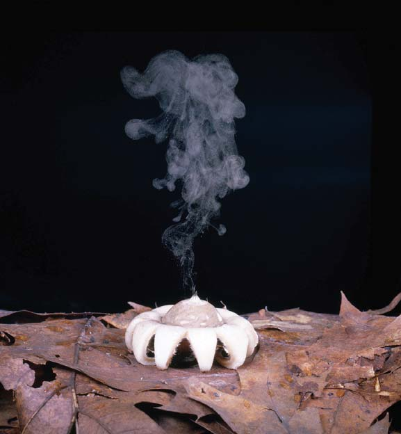
602 Capítulo 29
Los hongos absorben alimento del ambiente
Como los animales, los hongos son heterótrofos. Para sus necesidades nutricionales y de energía, dependen de moléculas de carbono preformadas producidas por otros organismos. Sin embargo, los hongos no ingieren alimento y luego lo digieren en el cuerpo como los animales. En vez de ello, infi ltran una fuente alimenticia y segregan enzimas digestivas en ella. La digestión tiene lugar afuera del cuerpo. Cuando moléculas complejas se descomponen en compuestos más pequeños, los hongos absorben el alimento predigerido en su cuerpo. El hongo es muy efi ciente al absorber nutrientes y crecer. Rápidamente convierte los nutrientes en nuevo material celular. Si están disponibles cantidades excesivas de nutrientes, los almacenan, por lo general como gotas de lípido o glucógeno.
Los hongos tienen paredes celulares que contienen quitina
Como las células de las bacterias, ciertos protistas y plantas, las células fúngicas están encerradas por paredes celulares durante al menos alguna etapa en su ciclo de vida. No obstante, las paredes celulares fúngicas tienen una composición química diferente de las paredes celulares de otros organismos. En la mayoría de los hongos, la pared celular consiste en carbohidratos complejos, incluida quitina , un polímero que consiste en subunidades de un azúcar que contiene nitrógeno (vea la fi gura 3-11). La quitina también es un componente de los esqueletos externos de insectos y otros artrópodos. Además es resistente a la descomposición por parte de la mayoría de los microorganismos.
La mayoría de los hongos consisten en una red de fi lamentos
Los hongos más simples son las levaduras , que son unicelulares, con una forma redonda u oval. Las levaduras están ampliamente distribuidas en el suelo; en hojas, frutos y carnes curtidas; y sobre y en los cuerpos humanos. Más adelante en este capítulo se estudia la importancia de algunas levaduras en medicina, investigación biológica y en la industria alimenticia.
Como los procariotas, la mayoría de los hongos son descomponedores que obtienen nutrientes y energía a partir de materia orgánica muerta. Son miembros vitales de los ecosistemas porque descomponen los compuestos orgánicos que se encuentran en organismos muertos, hojas, basura, aguas negras y otros desechos. Cuando descomponen compuestos orgánicos, liberan al ambiente carbono y otros elementos, donde se reciclan. Muchos hongos forman asociaciones simbióticas vitales. Por ejemplo, la mayoría de las plantas terrestres tienen compañeros fúngicos que viven en estrecha asociación con sus raíces. Los hongos ayudan a las plantas a obtener del suelo iones fosfato y otros minerales necesarios. A cambio, las plantas brindan a los hongos nutrientes orgánicos. Algunos hongos viven simbióticamente con algas y cianobacterias como líquenes. Otros son parásitos y patógenos que causan enfermedades en animales o plantas.
29.1 CARACTERÍSTICAS DE LOS HONGOS
OBJETIVOS DE APRENDIZAJE
1 Describir las características distintivas de los hongos. 2 Describir el plan corporal de un hongo.
Todos los hongos son eucariotas; sus células contienen núcleos encerrados en membrana, mitocondrias y otros organelos membranosos. Aunque varían notablemente en tamaño y forma, los hongos comparten ciertos caracteres clave, incluida su forma de obtener nutrición. El pH óptimo para la mayoría de las especies de hongos es de más o menos 5.6, pero varios de ellos pueden tolerar y crecer en ambientes donde el pH varía de 2 a 9. Muchos hongos son menos sensibles a altas presiones osmóticas que las bacterias. Como resultado, pueden crecer en soluciones salinas concentradas o en soluciones azucaradas como mermelada, que desalienta o evita el crecimiento bacterial. Los hongos también proliferan en un amplio rango de temperaturas. Los hongos incluso pueden invadir comida refrigerada.
Un micelio. Una masa de hifas forma un micelio (área blanca). Los cuerpos fructíferos, llamados esporangios, son visibles como áreas grises.
MEB de un micelio. El hongo Blumeria graminis crece en una hoja (área más oscura abajo del micelio).
Una hifa dividida en células por septos. Cada célula es monocariota (tiene un núcleo). En algunos taxones los septos están perforados, como se muestra.
Una hifa septada. En esta hifa, cada célula es dicariota (tiene dos núcleos).
Una hifa cenocítica.
Hifas
25 μ m
G. T. Cole/University of Texas/ Biological Photo Service
© Sidney Moulds/Photo Researchers, Inc.
FIGURA 29-1 Plan corporal del hongo Las esporas transportadas por el aire se asientan en el alimento. Germinan y producen una masa de fi lamentos con formas fi losas llamados hifas. Las hifas penetran el alimento para obtener nutrición, y producen una masa de hifas llamada micelio. Con el tiempo, a partir del micelio crecen hifas especializadas que dan lugar a tallos erectos con cuerpos fructíferos (esporangios) en su parte superior. Cuando las paredes de los esporangios se rompen, nuevas esporas se liberan en el aire.
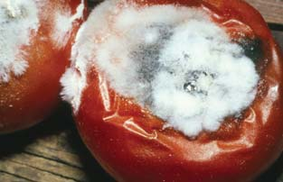
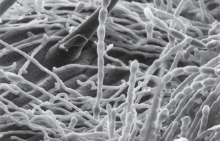
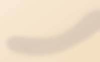
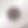

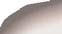

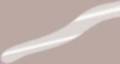


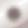


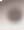

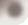


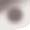

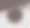
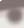


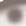


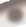
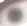
Los hongos 603
dispersan mediante viento, agua o animales. El aire está lleno con cientos de miles de esporas fúngicas. Cuando una espora germina, origina una hifa, que luego se desarrolla en un micelio ( FIGURA 29-2 ). Los hongos producen esporas o sexual o asexualmente. Con la reproducción asexual se producen rápidamente nuevos individuos, pero hay poca variabilidad genética. La reproducción sexual involucra meiosis y genera nuevos genotipos. Las esporas generalmente se producen en hifas aéreas especializadas o en estructuras fructíferas. Cuando están arriba del suelo, las esporas pueden dispersarse con facilidad. Las estructuras donde se producen esporas se llaman esporangios . Las hifas aéreas de algunos hongos producen esporas en grandes estructuras reproductoras complejas conocidas como cuerpos fructíferos . La parte familiar de una seta es un gran cuerpo fructífero. Usualmente las personas no ven la parte voluminosa del hongo, un micelio casi invisible enterrado fuera de la vista en el material en putrefacción o en el suelo sobre el que crece.
Muchos hongos se reproducen asexualmente
Las levaduras se reproducen de manera asexual, principalmente mediante la formación de yemas que se proyectan desde la célula progeni-
La mayoría de los hongos son multicelulares. El cuerpo consiste en largos fi lamentos ramifi cados con forma de hilo llamadas hifas ( FIGU-
RAS 29-1a y b ). Las hifas consisten en paredes celulares tubulares que rodean las membranas plasmáticas de las células fúngicas. Las hifas son una adaptación al modo de nutrición fúngico. El crecimiento ocurre en las puntas de las hifas; conforme las hifas se alargan, el hongo crece e infi ltra las fuentes de alimentos. El hongo absorbe nutrientes a través de su muy grande área superfi cial. Conforme las hifas crecen, forman una masa enmarañada o red con forma de tejido llamada micelio . Los hongos que forman micelios se llaman mohos . El moho con forma de telaraña que en ocasiones se observa sobre el pan es el micelio de un hongo. Lo que no se ve es el extenso micelio que crece dentro del pan. Dependiendo de las condiciones ambientales, algunos hongos pueden alternar entre una fase de levadura y una fase en la que producen hifas. En la mayoría de los hongos, las hifas se dividen mediante paredes celulares, llamadas septos , en células individuales que contienen uno o más núcleos ( FIGURAS 29-1c y d ). Como se estudiará más adelante, la presencia de septos es una característica importante en los dos fi los fúngicos más grandes (que incluyen los hongos más complejos). Los septos de muchos hongos están perforados por un poro que puede ser sufi cientemente grande para permitir que los organelos fl uyan de célula a célula. Algunos hongos, llamados cenocíticos , carecen de septos. En estas especies, la división nuclear no es seguida por división citoplásmica. Como resultado, un hongo cenocítico es una célula gigante, alargada y multinucleada ( FIGURA 29-1e ).
Repaso
■ ¿Qué características distinguen a los hongos de otros organismos?
■ ¿Cómo difi eren los cuerpos de una levadura y de un moho?
29.2 REPRODUCCIÓN FÚNGICA
OBJETIVO DE APRENDIZAJE
3 Describir el ciclo de vida de un hongo típico, incluidas las reproducciones sexual y asexual.
La mayoría de los hongos se reproducen mediante esporas microscópicas, células reproductivas que pueden desarrollarse hasta ser nuevos organismos. En la mayoría de los grupos, las esporas no son mótiles, y se
Espora
Hifa
Micelio
FIGURA 29-2 Germinación de una espora para formar un micelio
- Las levaduras pueden reproducirse asexualmente por gemación.
Desarrollo de yemas
- MEB (falso color) de Saccharomyces cerevisiae. También conocida como levadura de panadero o cervecero, este hongo puede fermentar azúcares y producir dióxido de carbono y alcohol en el proceso. Se utiliza en la fabricación de cerveza, en la producción de vino y en la elaboración de pan. Observe que varias células de levadura están en gemación, una forma de reproducción asexual.
SciMat/Photo Researchers, Inc.
5 μ m
FIGURA 29-3 Las levaduras son hongos unicelulares

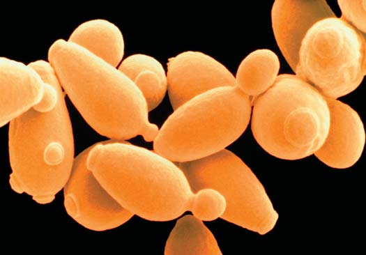
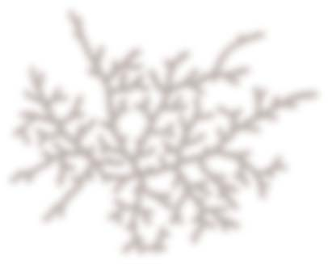
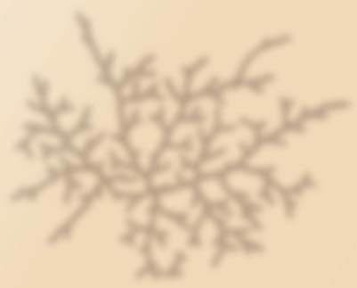
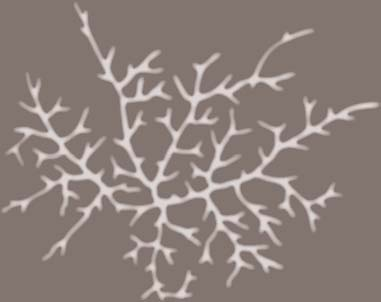

604 Capítulo 29
La mayoría de los hongos se reproduce sexualmente
Los hongos son un grupo diverso con muchas variaciones en sus ciclos de vida. La mayoría de los hongos (mas no todos) se reproducen tanto asexual como sexualmente. La FIGURA 29-4 ilustra un ciclo de vida generalizado. Muchas especies fúngicas se reproducen sexualmente cuando
tora ( FIGURA 29-3 ). Muchas especies de hongos multicelulares también se reproducen asexualmente. Las esporas se producen por mitosis y luego se liberan en el aire o agua. Los conidióforos (del griego para “portadores de polvo”) son hifas especializadas que producen esporas asexuales llamadas conidias . El arreglo de conidias en los conidióforos varía entre las especies.
La mayoría de los hongos pueden reproducirse de manera tanto asexual (que permite proliferación rápida) como sexual (que produce nuevos genotipos).
Plasmogamia
Cariogamia Meiosis
Las esporas germinan y forman micelios por mitosis.
1
Gran cantidad de esporas haploides ( n ) se producen por mitosis.
7 La espora germina y forma micelio por mitosis.
8
Los micelios de dos tipos de apareamiento diferentes se fusionan en sus puntas y ocurre plasmogamia (fusión de citoplasma).
2
Desarrollo de micelio dicariota ( n + n ).
3
Ocurre cariogamia (fusión de núcleos) y forma un núcleo de cigoto diploide (2 n ).
4
La meiosis resulta en cuatro núcleos haploides ( n ) genéticamente diferentes. Las esporas se desarrollan alrededor de núcleos.
5
Liberación de esporas
6
Micelio
Reproducción asexual
Reproducción sexual
Etapa haploide ( n )
Etapa dicariota ( n + n )
Etapa diploide (2 n )
Esporas
Micelio dicariota
Núcleo de cigoto (2 n )
FIGURA 29-4 Secuencia básica de eventos en la mayoría de los ciclos de vida fúngicos
PUNTO CLAVE
Los hongos 605
trición también es muy diferente al de las plantas. A diferencia de las plantas, los hongos no pueden producir sus propios materiales orgánicos a partir de una fuente simple de carbono (dióxido de carbono). Como los animales, los hongos son heterótrofos. Como ocurre con la sistemática de otros reinos, la sistemática fúngica es un proceso desafi ante y en cambio continuo. Por ejemplo, los mohos mucilaginosos y los oomicetos anteriormente se clasifi caron como hongos pero ahora se asignan al reino protista (vea el capítulo 26).
Los hongos se asignan al clado opistoconto
Los sistemáticos plantean la hipótesis de que el ancestro común de todas las plantas, hongos y animales fue una protista fl agelada primitiva. Como estudió en el capítulo 26, amebozoos (un grupo de amebas), hongos, animales y algunas protistas, incluidos los coanofl agelados (un grupo de protistas fl agelados), forman un “supergrupo” monofi lético, los unicontos . Dentro de este supergrupo, el clado opistocontos incluye coanofl agelados, animales y hongos. Semejanzas tanto genéticas como estructurales apoyan este agrupamiento. Como los animales, los hongos tienen crestas parecidas a placas en sus mitocondrias. Otra característica clave compartida por los miembros de este clado es que las células fl ageladas se impulsan ellas mismas con un solo fl agelo posterior. En otros grupos eucariotas, las células fl ageladas se mueven mediante uno o más fl agelos anteriores. Con base en características estructurales y en datos moleculares, los sistemáticos ahora ven a los hongos como más cercanamente emparentados a los animales que a las plantas.
Diversos grupos de hongos han evolucionado
La evidencia fósil no ha sido muy útil para los sistemáticos que estudian las relaciones evolutivas entre grupos fúngicos. La mayoría de los hongos fosilizados recuperados a la fecha son microscópicos. Por ejemplo, esporas fúngicas fosilizadas se han encontrado en ámbar con más de 225 millones de años de antigüedad, y fósiles de hifas asociadas con cianobacterias o algas se dataron en más de 550 millones de años de antigüedad. Se han encontrado algunos fósiles fúngicos grandes, como setas. Históricamente, los hongos se clasifi can sobre todo con base en las características de sus esporas sexuales y cuerpos fructíferos. Más recientemente, datos moleculares, como secuencias comparativas de ADN y ARN, ayudaron a clarifi car las relaciones entre grupos fúngicos. En la actualidad, muchos micólogos asignan los hongos a cinco grupos principales: Chitridiomycota, Zigomycota, Glomeromycota, Ascomycota y Basidiomycota ( FIGURA 29-5 y TABLA 29-1 ). Algunos biólogos consideran cada uno de estos grupos como un fi lo. Sin embargo, algunos de estos grupos no son monofi léticos (vea el capítulo 23) y los micólogos están en el proceso de asignar hongos a clados adicionales. En esta edición de Biología se estudiarán hongos en los cinco fi los que se muestran en la fi gura 29-5 y se mencionan en la tabla 29-1. Los microsporidios, un grupo de parásitos intracelulares, se clasifi can en este texto con los cigomicetos, aunque en el futuro pudieran asignarse a su propio taxón. Alrededor del 95% de todos los hongos nombrados se asignan a los fi los Ascomycota y Basidiomycota. Estos fi los se consideran taxones hermanos porque comparten un ancestro común más reciente entre ellos que con cualquier otro grupo. Los hongos de los fi los Ascomycota y Basidiomycota tienen hifas septadas y una etapa dicariota durante la parte sexual de su ciclo de vida. Hasta recientemente, los micólogos asignaron aproximadamente 25,000 especies de hongos que no encajaban en los grupos principales a un grupo llamado deuteromicetos (fi lo Deuteromycota). Éste era un grupo polifi lético (los miembros no comparten ancestro común re-
entran en contacto con otros tipos de apareamiento. En contraste con la mayoría de las células animales y vegetales, la mayoría de las células fúngicas contienen núcleos haploides. En la reproducción sexual, se reúnen las hifas de dos tipos de apareamiento genéticamente compatibles, y se fusionan sus citoplasmas, un proceso llamado plasmogamia . La célula resultante tiene dos núcleos haploides, uno de cada hongo. Esta célula origina por mitosis otras células con dos núcleos. En algún punto se fusionan los dos núcleos haploides. Este proceso, llamado cariogamia , resulta en una célula que contiene un núcleo diploide conocido como núcleo de cigoto . En algunos grupos, el núcleo de cigoto es el único núcleo diploide. En los dos fi los fúngicos más grandes, los ascomicetos y los basidiomicetos (que se estudian más adelante en este capítulo), ocurre plasmogamia (fusión de hifas), pero la cariogamia (fusión de los dos núcleos diferentes) no sigue inmediatamente. Durante un tiempo el núcleo permanece separado dentro del citoplasma fúngico. Las hifas que contienen dos núcleos genéticamente distintos pero sexualmente compatibles dentro de cada célula se describen como dicariotas (vea la fi gura 29-1d). A esta condición se le refi ere como n + n en lugar de 2 n , porque existen dos núcleos haploides separados. Las hifas que sólo contienen un núcleo por célula se describen como monocariotas . La presencia de una etapa dicariota es una importante característica defi nitoria de ascomicetos y basidiomicetos. Los hongos se comunican químicamente al segregar moléculas de señalización llamadas feromonas . Al menos una feromona se ha identifi cado en cada uno de los principales grupos fúngicos. La feromona se enlaza con un receptor compatible en un tipo de apareamiento diferente. Por ejemplo, en los cigomicetos, una feromona induce la formación de hifas aéreas especializadas. Otra feromona hace que las puntas de hifas aéreas de tipos de apareamiento opuesto crezcan una hacia la otra y se fusionen antes de la reproducción sexual.
Repaso
■ ¿En qué se diferencian el núcleo monocariota del núcleo dicariota?
■ Dibuje un ciclo de vida generalizado de un hongo.
29.3 DIVERSIDAD FÚNGICA
OBJETIVOS DE APRENDIZAJE
4 Ofrecer argumentos para apoyar la hipótesis de que los hongos son opistocontos, más cercanamente emparentados a los animales que a las plantas. 5 Ofrecer argumentos para apoyar la hipótesis de que los quitridiomicetos pudieron ser el grupo fúngico más primitivo en evolucionar a partir del ancestro común más reciente de los hongos. 6 Mencionar características distintivas, describir un ciclo de vida típico y dar ejemplos de cada uno de los siguientes grupos fúngicos: quitridiomicetos, cigomicetos, glomeromicetos, ascomicetos y basidiomicetos.
Durante siglos, los biólogos clasifi caron los hongos en el reino vegetal. Como las planas, los hongos tienen paredes celulares y vacuolas y son sésiles (esto es: no pueden moverse de un lugar a otro). Además, como las plantas, muchos tipos de hongos habitan el suelo. Sin embargo, los sistemáticos comenzaron a cuestionar esta clasifi cación y, en 1969, R. H. Whitt aker propuso que los hongos fueran asignados a un reino separado: Fungi. A diferencia de las plantas, las paredes celulares fúngicas no contienen celulosa. En vez de ello, contienen quitina, un polisacárido que se encuentra en los esqueletos de los insectos. El modo fúngico de nu-
606 Capítulo 29
cen mediante conidias, como lo hacen los ascomicetos. Los micólogos identifi caron relaciones entre deuteromicetos y sus parientes que se reproducen sexualmente, con base en comparaciones de ADN entre varias especies. La mayoría de los deuteromicetos se reasignaron al fi lo Ascomycota, y algunos se reasignaron al fi lo Basidiomycota. (Por convención, la etapa asexual todavía se identifi ca como un deuteromiceto).
Los quitridiomicetos tienen esporas fl ageladas
En una época, los biólogos consideraron a los quitridiomicetos , también conocidos como quitridios (fi lo Chytridiomycta), como protistas parecidos a hongos, similares en muchos aspectos a los oomicetos. Sin embargo, características estructurales y moleculares indican que las aproximadamente 1000 especies de quitridiomicetos son miembros del reino Fungi. Como los hongos, sus paredes celulares contienen quitina, y comparaciones moleculares, en particular de secuencias de ADN y ARN, proporcionan evidencia convincente de que los quitridiomicetos de hecho son hongos. Sin embargo, recientes comparaciones de secuencias de ARNr sugieren que los quitridiomicetos no son un grupo monofi lético y pudiera dividirse en cuatro clados. Los quitridiomicetos son hongos pequeños relativamente simples que habitan estanques y suelo húmedo. Algunas especies se encuentran en agua salada. La mayoría de los quitridiomicetos son descomponedores que degradan materia orgánica. Sin embargo, algunas especies causan enfermedades en plantas y animales. Un quitridiomiceto parásito es en parte responsable del declive en poblaciones de anfi bios. En muchas partes del mundo se han identifi cado ranas infectadas (vea Preguntas acerca de: Declive en poblaciones de anfi bios , en el capítulo 57). La mayoría de los quitridiomicetos son unicelulares o están compuestos de algunas células que forman un cuerpo simple, llamado talo . El término talo describe el plan corporal simple de ciertas algas, hongos y plantas. El talo puede tener extensiones delgadas, llamadas rizoides , que lo sujetan a una fuente de alimento y absorben el alimento ( FIGURA 29-6 ). Los quitridiomicetos son los únicos hongos que tienen células fl ageladas. Sus esporas tienen un solo fl agelo posterior. En la mayoría de los quitridiomicetos no se ha identifi cado reproducción sexual. Las especies que se reproducen sexualmente tienen gametos fl agelados.
ciente) conjuntado simplemente por cuestión de conveniencia. Los micólogos clasifi caron los hongos como deuteromicetos si no observaban en estas etapas sexuales en algún punto durante su ciclo de vida. Algunos de estos hongos perdieron la habilidad para reproducirse sexualmente, mientras que otros se reproducían asexualmente sólo rara vez. La mayoría de los hongos clasifi cados como deuteromicetos sólo se reprodu-
Quitridiomicetos
Cigomicetos
Glomeromicetos
Ascomicetos
Basidiomicetos
Ancestro común flagelado
Pérdida de flagelo
Evolución de etapa dicariota
Evolución de basidiosporas
Evolución de ascosporas
FIGURA 29-5 Cladograma de grupos de hongos actualmente reconocidos Este cladograma muestra relaciones fi logenéticas entre hongos vivientes, con base en comparaciones de datos de secuencias genéticas ribosómicas y nucleares para muchas especies. Los quitridiomicetos fueron el linaje que se ramifi có primero durante la evolución fúngica. Observe que ascomicetos y basidiomicetos son clados hermanos. Recuerde que la fi logenia de los hongos es una obra en proceso.
Características de los fi los de hongos actualmente reconocidos
Filo y tipos comunes Reproducción asexual Reproducción sexual Otras características clave
Chytridiomycota (quitridiomicetos) Allomyces
Zoosporas fl ageladas diploides producidas por mitosis en zoosporangios
Gametos fl agelados haploides en algunas especies
Zoosporas haploides producidas en esporangios latentes; forman talo haploide
Zygomycota (cigomicetos) Moho negro del pan. Los microsporidios se clasifi can con los cigomicetos
Esporas haploides producidas en esporangios Cigosporas desarrolladas en cigosporangios Importantes descomponedores; algunos son parásitos de insectos. Los microsporidios son patógenos oportunistas que infectan animales
Glomeromycota (glomeromicetos) Grandes blastosporas multinucleadas No se ha observado Forman micorrizas arbusculares con raíces de plantas
Ascomycota (ascomicetos) Levaduras, mildiú polvoriento, mohos, colmenillas, trufas
Conidias estranguladas de los conidióforos Ascosporas desarrolladas en ascos Tienen una etapa dicariota; forman importantes relaciones simbióticas como líquenes y micorrizas.
Basidiomycota (basidiomicetos u hongos clava) Setas, hongos de repisa, bejines, royas, tizones
Rara Basidiosporas desarrolladas en basidios con forma de clava
Tienen una etapa dicariota; muchas forman micorrizas con raíces de árboles
TABLA 29-1
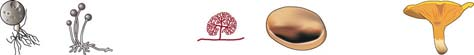
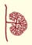
Los hongos 607
fúngico tiene células fl ageladas. En algún punto de su historia evolutiva, otros grupos fúngicos aparentemente perdieron la capacidad para producir células mótiles, acaso durante la transición de los hábitats acuáticos a los terrestres.
Los cigomicetos se reproducen sexualmente al formar cigosporas
Los micólogos han nombrado más de 1100 especies de cigomicetos (fi lo Zygomycota). De todos los hongos, los miembros de este taxón parecen más cercanamente emparentados con los quitridiomicetos. Sin embargo, los cigomicetos no son un grupo monofi lético, y conforme los micólogos aprenden más acerca de las relaciones fúngicas, pueden dividir este fi lo en varios taxones o reasignar sus miembros a los otros fi los existentes. La mayoría de los cigomicetos son descomponedores que viven en el suelo sobre materia vegetal o animal en descomposición ( FIGURA
29-8 ). Algunos cigomicetos forman un tipo de asociación simbiótica (relación micorrizal) con las raíces de las plantas. (Recuerde que una asociación simbiótica es una relación íntima entre organismos de diferentes especies). Algunas especies causan enfermedades en plantas y animales, incluidos humanos. Durante la reproducción sexual, los cigomicetos producen esporas sexuales, llamadas cigosporas . Las cigosporas usualmente se producen en sacos de esporas llamados cigosporangios . Las hifas en los cigomicetos son cenocíticas; esto es: carecen de septos espaciados regularmente. Sin embargo, los septos se forman para separar las hifas de las estructuras reproductivas. El cigomiceto más familiar es el moho negro del pan, Rhizopus stolonifer , un descomponedor que descompone el pan y otros alimentos. Si no se agregan conservadores, el pan que se deja a temperatura ambiente durante algunos días con frecuencia se cubre con una capa negra vellosa. El pan enmohece cuando una espora cae en él y luego germina y crece en un micelio ( FIGURA 29-9 en la página 610). Las hifas penetran el pan y absorben nutrientes. A la larga, ciertas hifas crecen hacia arriba y desarrollan esporangios en sus puntas. Dentro de cada esporangio pueden crecer grupos de más de 50,000 esporas asexuales negras. Las esporas se liberan cuando se rompe el delicado esporangio. Las esporas otorgan al moho negro del pan su olor característico. La reproducción sexual en el moho negro del pan ocurre cuando las hifas de dos diferentes tipos de apareamiento, designadas más ( + ) y menos ( – ), crecen en contacto mutuo. El moho de pan es heterotálico , lo que signifi ca que una hifa fúngica individual sólo se aparea con una hifa de un tipo de apareamiento diferente. Esto es: la reproducción sexual sólo ocurre entre un miembro de una cepa ( + ) y una de una cepa ( – ), no entre miembros de dos cepas ( + ) o miembros de dos cepas ( – ). Puesto que no existen diferencias físicas entre los dos tipos de apareamiento, no es adecuado referirse a ellos como “masculino” y “femenino”. Cuando hifas de tipos de apareamiento opuestos crecen en estrecha proximidad, se señalan mutuamente con feromonas. En respuesta a estas señales químicas, las puntas de las hifas se acercan y forman gametangios , que funcionan como gametos. La plasmogamia ocurre conforme se fusionan los gametangios. Luego ocurre cariogamia conforme los núcleos ( + ) y ( – ) se fusionan para formar el núcleo cigoto diploide. El cigoto se desarrolla hasta ser una cigospora. Las cigosporas están encerradas en un grueso cigosporangio protector. La cigospora puede quedar latente durante varios meses. Puede sobrevivir la desecación y temperaturas extremas. La meiosis probablemente ocurre en o justo antes de la germinación de la cigospora.
Algunos quitridiomicetos producen micelios cenocíticos ramifi cados Allomyces , un gran quitridiomiceto común, tiene un ciclo de vida inusual comparado con el de la mayoría de los hongos. Experimenta alternancia de generaciones (común en plantas, mas rara en hongos), y pasa parte de su vida como talo haploide ( n ) multicelular y parte como talo diploide (2 n ) multicelular ( FIGURA 29-7 ). Los talos haploide y diploide son similares en apariencia. En las puntas de sus ramas, el talo haploide tiene dos tipos de esporangios, estructuras donde se forman gametos por mitosis. Cada esporangio produce un tipo diferente de gameto fl agelado. Cada tipo de gameto segrega una feromona que atrae al otro tipo. Los dos gametos se fusionan y ocurren plasmogamia y cariogamia, lo que resulta en un cigoto mótil. Cada cigoto puede desarrollarse hasta convertirse en un talo diploide. El talo porta dos tipos de estuches de esporas, zoosporangios y esporangios latentes. Los zoosporangios producen zoosporas fl ageladas diploides que se desarrollan hasta ser nuevos talos diploides. Dentro de los esporangios latentes ocurre meiosis, lo que produce zoosporas haploides. Cada zoospora tiene el potencial de desarrollarse hasta llegar a ser un talo haploide. La evidencia molecular sugiere que los quitridiomicetos probablemente fueron el grupo fúngico más primitivo en evolucionar. Los quitridiomicetos producen células fl ageladas en alguna etapa de su historia de vida, una característica que los sistemáticos rastrean hasta la protista que fue el ancestro común de todos los opistocontos. Ningún otro grupo
5 μ m
John Taylor/Visuals Unlimited, Inc.
FIGURA 29-6 Quitridiomiceto Micrografía de interferencia diferencial de Nomarski de un quitridiomiceto común ( Chytridium convervae ). Muchos quitridiomicetos tienen una forma corporal microscópica que consiste en un talo cenocítico redondeado y rizoide ramifi cado que superfi cialmente parecen raíces. Los rizoides pueden fi jar el talo del quitridiomiceto y absorber alimento predigerido.
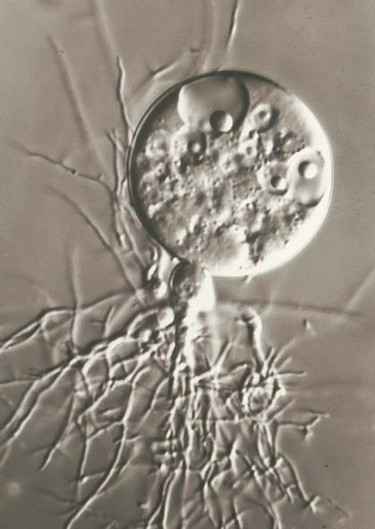
608 Capítulo 29
Los quitridiomicetos tienen células reproductoras fl ageladas.
GENERACIÓN HAPLOIDE ( n )
GENERACIÓN DIPLOIDE (2 n )
Plasmogamia y cariogamia Meiosis
REPRODUCCIÓN ASEXUAL (por mitosis)
REPRODUCCIÓN SEXUAL
Gameto tipo A
Cigoto mótil
Talo haploide maduro
Esporangio
Zoospora haploide
Esporangio latente
Esporangio latente
Zoosporangio
Zoospora diploide
Gameto tipo B
1 La zoospora haploide se convierte en talo haploide.
2 El talo haploide produce dos tipos de gametos por mitosis.
3 Los gametos se fusionan y sus núcleos se fusionan, lo que produce cigoto flagelado.
4 El cigoto germina y se desarrolla hasta ser un talo diploide.
5 En los esporangios latentes ocurre meiosis.
6 Zoosporas haploides se producen por meiosis.
7 Los zoosporangios producen zoosporas diploides flageladas por mitosis. Las zoosporas originan nuevos talos diploides.
Quitridiomicetos
Cigomicetos
Ascomicetos
Basidiomicetos
Glomeromicetos
Ancestro común flagelado
FIGURA 29-7 Ciclo de vida del quitridiomiceto Allomyces arbuscula Allomyces alterna entre etapas haploide y diploide, que son similares en apariencia.
PUNTO CLAVE
Los hongos 609
cada de 1980, los biólogos vieron a los microsporidios como el ejemplo más primitivo de un eucariota. Eran los eucariotas más pequeños y más simples conocidos, y los genomas de algunas especies son más pequeños que la mayoría de los genomas bacteriales. Los microsporidios carecen de mitocondrias, fl agelos y complejos de Golgi. Sus ribosomas se parecen a los de los procariotas. En 1998, el biólogo británico Th omas Cavalier-Smith reasignó los microsporidios al reino Fungi. Estudios moleculares demuestran que los microsporidios tienen secuencias genéticas que indican que originalmente tenían mitocondrias. Los microbiólogos ahora acuerdan de manera general que estos organismos se han vuelto más simples conforme se adaptan a su estilo parásito de vida. Otros estudios moleculares proporcionan evidencia adicional para su relación taxonómica con los hongos. Establecer que están cercanamente emparentados con los hongos es importante para crear medicamentos que serán efectivos en el tratamiento de infecciones por microsporidios. Estudios genómicos recientes sugieren que los microsporidios descendieron de un ancestro cigomiceto. Por ahora, los microsporidios se clasifi can con los cigomicetos, pero en el futuro pueden asignarse a un taxón separado.
Los glomeromicetos son simbiontes con raíces de plantas
Los glomeromicetos (fi lo Glomeromycota) tienen hifas cenocíticas (no septos). Se reproducen asexualmente con grandes esporas multinucleadas llamadas blastosporas . No se ha documentado reproducción sexual. Sólo se ha descrito alrededor de 200 especies de glomeromicetos. Los glomeromicetos anteriormente se consideraron cigomicetos, pero en 2002 taxonomistas determinaron que formaban un grupo monofi lético separado. Esta fi logenia se basa en datos moleculares. Los glomeromicetos son simbiontes que forman asociaciones intracelulares con las raíces de la mayoría de los árboles y plantas herbáceas. Estas asociaciones simbiontes entre las hifas de ciertos hongos y las raíces de plantas se llaman micorrizas (del griego para “raíces de hongo”) ( FIGURA 29-11 ). Los glomeromicetos extienden sus hifas a través de las paredes celulares de las células de la raíz, pero frecuentemente no pueden penetrar la membrana plasmática. Conforme cada hifa presiona hacia adelante, la membrana plasmática de la célula de la raíz la rodea. Por ende, la hifa puede considerarse como dedos que empujan hacia un guante formado por la membrana plasmática. Puesto que penetran la pared celular, estos hongos se conocen como hongos endomicorrizos . Los endomicorrizos más difundidos se llaman micorrizas arbusculares porque las hifas dentro de las células de raíz forman estructuras ramifi cadas con forma de árbol conocidas como arbúsculos (vea las fi guras 29-11 y 36-11b). Los arbúsculos son los sitios de intercambio de nutrientes entre la planta y el hongo. Las micorrizas arbusculares viven totalmente bajo tierra. En las relaciones micorrizas, las raíces brindan al hongo azúcares, aminoácidos y otras sustancias orgánicas. Los hongos micorrizos descomponen material orgánico en el suelo y también benefi cian a la planta al extender el alcance de sus raíces. Los micelios delgados son mucho más delgados que las raíces y pueden extenderse hacia espacios estrechos, y absorben nutrientes que las plantas no podrían capturar por cuenta propia. En consecuencia, con la ayuda del hongo micorrizo, la planta también puede tomar más minerales nutrientes como fósforo y nitrógeno. Lo que acaba de describirse es una asociación simbiótica mutualista: ambos participantes se benefi cian. Los estudios muestran que, si una planta crece en suelo con defi ciencia de fosfato o si tiene un sistema de raíces limitado, su crecimiento mejora si tiene un compañero fúngico.
Cuando la cigospora germina, una hifa aérea se desarrolla con un esporangio en la punta. La mitosis dentro del esporangio produce esporas haploides. Estas esporas pueden ser todas ( + ), todas ( − ) o una mezcla de ( + ) y ( − ). Cuando se liberan, las esporas germinan para formar nuevas hifas. Sólo el cigoto y la cigospora de un moho negro del pan son diploides; todas las hifas y las esporas asexuales son haploides.
Los microsporidios son un misterio taxonómico
Los microsporidios son pequeños parásitos unicelulares que infectan células eucariotas. Son patógenos oportunistas que infectan animales. Por ejemplo, los microsporidios infectan personas con sistemas inmunológicos comprometidos, como quienes tienen SIDA. Los microsporidios causan varias enfermedades que involucran muchos sistemas orgánicos, y algunas especies causan infecciones mortales. Algunas especies de microsporidios parecen ser específi cas de huésped. Los microsporidios tienen dos etapas de desarrollo dentro de su huésped: una etapa de alimentación y una etapa reproductiva. Algunas especies de microsporidios se dividen en dos células mediante fi sión binaria, y otras se dividen en varias células. Algunas especies experimentan fusión nuclear y meiosis antes de producir esporas. Las esporas, que tienen gruesas paredes protectoras, pueden pasar de célula a célula dentro del huésped o pueden excretarse en la orina o a través de la piel. Las esporas, la única etapa con características distintivas, se usan para identifi car grupos. Cada espora está equipada con una estructura única, un largo tubo polar con forma de hilo. Cuando la espora entra al intestino de un nuevo huésped, descarga su tubo polar y penetra el recubrimiento del intestino. Al actuar como aguja hipodérmica, el tubo polar inyecta el contenido de la espora en la célula huésped ( FIGURA 29-10 ). Los microbiólogos estiman que puede haber más de un millón de especies de microsporidios, pero sólo se han nombrado alrededor de 1500 especies. Los microsporidios originalmente se clasifi caron con las levaduras y bacterias. En 1976, se asignaron a los protozoarios. En la dé-
Cabisco/Visuals Unlimited
FIGURA 29-8 Pilobolus , un cigomiceto que crece en excremento animal Esporangios con tallo de Pilobolus se proyectan desde una pila de estiércol, que contiene un extenso micelio del hongo. Los esporangios con tallo, que miden de 5 a 10 mm de alto, actúan como escopetas y descargan con fuerza esporangios (las puntas negras), alejándolos del estiércol hacia el césped cercano. Cuando animales como reses o caballos comen el césped, las esporas pasan sin daño a través del sistema digestivo del animal y se depositan en una pila fresca de estiércol.
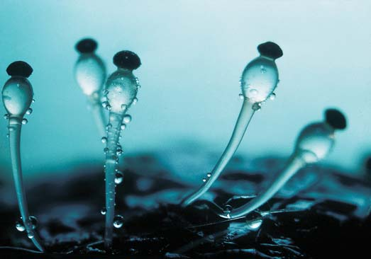
610 Capítulo 29
Como la mayoría de los hongos, la mayoría de los cigomicetos se reproducen tanto asexual como sexualmente.
1 Las esporas germinan y producen micelios haploides.
2a En la reproducción asexual, ciertas hifas forman esporangios en los que se desarrollan grupos de esporas haploides negras asexuales. Cuando se liberan, originan nuevas hifas.
2b Hifas con tipos de apareamiento ( + ) y ( − ) crecen una hacia otra.
3 Cuando se encuentran hifas ( + ) y ( − ), forman gametangios. 4 La plasmogamia ocurre conforme se fusionan los gametangios. 5 La cariogamia ocurre con la fusión de núcleos para formar cigoto diploide.
6 La cigospora se desarrolla a partir del cigoto; está encerrada por un cigosporangio negro con pared gruesa.
7 La meiosis ocurre y la cigospora germina; la hifa desarrolla esporangio en su punta.
Quitridiomicetos
Cigomicetos
Ascomicetos
Basidiomicetos
Glomeromicetos
Ancestro común flagelado
Meiosis Plasmogamia
Cariogamia
ETAPA HAPLOIDE ( n )
ETAPA DIPLOIDE (2 n )
REPRODUCCIÓN ASEXUAL (mediante esporas) Haploide ( n )
REPRODUCCIÓN SEXUAL
Espora que germina
Esporangios
–
–
–
Gametangios
Cigospora madura dentro de cigosporangio
Germinación de cigospora
Esporangio que contiene esporas haploides producidas por mitosis
Esporas
FIGURA 29-9 Animada Ciclo de vida de un cigomiceto, el moho negro del pan ( Rhizopus stolonifer )
PUNTO CLAVE
Los hongos 611
para formar líquenes. Por el lado negativo, los ascomicetos causan la mayoría de las enfermedades fúngicas de plantas y animales, incluidos los humanos. Por ejemplo, los ascomicetos causan serias enfermedades en las plantas, como la enfermedad holandesa del olmo, el cornezuelo del centeno, el mildiú en frutos y plantas de ornato, y el chancro del castaño. En ocasiones, a los ascomicetos se les conoce como hongos saco , porque sus esporas sexuales se producen en sacos microscópicos llamados ascos . Sus hifas comúnmente tienen septos, pero estas paredes transversales tienen poros de modo que el citoplasma es continuo de un compartimiento celular al siguiente. En la mayoría de los ascomicetos, la reproducción asexual involucra producción de esporas llamadas conidias , que se forman en las puntas de ciertas hifas especializadas conocidas como conidióforos ( FIGURA 29-12 ). La producción de estas esporas es una forma de rápida propagación de nuevos micelios cuando las condiciones ambientales son favorables. Las conidias se presentan en varias formas, tamaños y colores en diferentes especies. El color de las conidias produce los característicos tintes azulverdoso, rosa, pardo u otros en muchos de estos mohos. Algunas especies de ascomicetos son heterotálicas. (Recuerde que heterotálico signifi ca que una hifa fúngica individual sólo se aparea con una hifa de un tipo de apareamiento diferente). Otras son homotálicas , lo que signifi ca que se autofecundan y tienen la capacidad de aparearse consigo mismas. En los ascomicetos heterotálicos y homotálicos, la reproducción sexual tiene lugar después de que dos gametangios se reúnen y su citoplasma se entremezcla. Ahora examine el ciclo de vida de un ascomiceto típico ( FIGURA
29-13 ). En el ejemplo, la plasmogamia tiene lugar conforme las hifas de dos diferentes tipos de apareamiento se reúnen y fusionan. Dentro de esta estructura fusionada, pares de núcleos haploides, uno de cada hifa progenitora, se asocia mas no se fusiona. Nuevas hifas, con células
Sin embargo, una planta en suelo rico en fosfato con un sistema de raíces bien desarrollado quizá no necesite compañeros fúngicos. Para estas plantas los hongos pueden ser un parásito. Queda mucho por aprender acerca de las asociaciones micorrizas. Otros benefi cios de la simbiosis, todavía desconocidos, pueden defi nir la asociación como mutualista. Por ejemplo, algunos hongos liberan alcaloides que protegen las plantas de herbívoros y patógenos. Las plantas también intercambian nutrientes entre ellas a través de hongos que las conectan. Los científi cos descubrieron hongos micorrizos dentro de fósiles de plantas primitivas en rocas que tienen una antigüedad aproximada de 400 millones de años. Estos hallazgos sugieren que, cuando las plantas se mudaron a tierra, sus compañeros fúngicos se mudaron con ellos. De hecho, los compañeros fúngicos pudieron ser críticos para que las primeras plantas vasculares colonizaran la tierra, porque las hifas fúngicas pudieron brindar a las plantas agua y minerales antes de que evolucionaran sus propios sistemas de raíces.
Los ascomicetos se reproducen asexualmente al formar ascosporas
Los ascomicetos (fi lo Ascomycota) comprenden un gran grupo de hongos que consisten en más de 32,000 especies descritas. Los diversos ascomicetos incluyen a la mayoría de las levaduras; mildiús; la mayoría de los mohos azul-verdoso, rosas y pardos que causan la putrefacción de los alimentos; hongos taza descomponedores; y las colmenillas y trufas comestibles. Los ascomicetos, más que cualquier otro grupo de hongos, tienen repercusión en los humanos. Como se estudiará en una sección posterior, los ascomicetos se usan para dar sabor a los quesos, para elaborar pan (levadura) y para fermentar alcohol. Algunos se disfrutan como alimentos (colmenillas y trufas). Los ascomicetos se usan para producir antibióticos. También han servido como valiosos organismos modelo para que los biólogos estudien procesos celulares, incluida la síntesis de proteínas. Muchos hongos en este grupo forman micorrizas con las raíces de los árboles, y alrededor del 40% se unen con algas verdes o cianobacterias
FIGURA 29-10 Infección por microsporidio
Célula huésped
Célula de microsporidio
Tubo polar
La espora de microsporidio tiene tubo polar enredado.
1 La espora expulsa su tubo polar y penetra la célula huésped.
2 El citoplasma infeccioso se inyecta en la célula huésped.
3
FIGURA 29-11 Micorriza arbuscular Este micelio creció en una raíz de planta. Su hifa se ramifi ca entre las células de la raíz. Las hifas penetraron las paredes celulares de dos células de raíz y se ramifi caron ampliamente para formar arbúsculos. La punta de una hifa entre las células de raíz se alargó y sirve como vesícula que almacena alimento. La punta de una hifa en el suelo se alargó y formó una espora. Los espacios entre las células de raíz se amplifi caron para dar claridad.
Célula de corteza
Espora
Pelo radical
Suelo
Hifa de hongo
Células de corteza de raíz
Vesícula
Arbúsculo
Epidermis de raíz
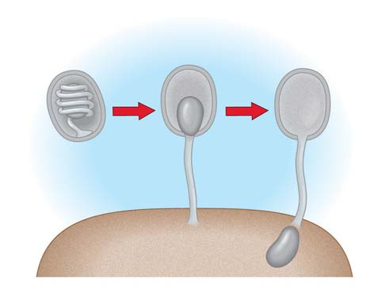
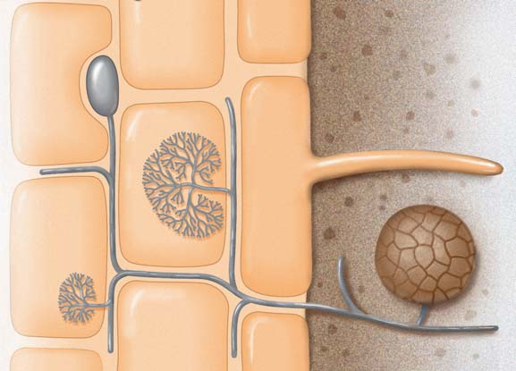
612 Capítulo 29
fi nalmente se separa de la célula progenitora (vea la fi gura 29-3). Cada yema puede crecer hasta convertirse en una nueva célula de levadura. Las levaduras se reproducen sexualmente mediante la formación de ascosporas. Durante la reproducción sexual se fusionan dos levaduras haploides y forman un cigoto diploide. El cigoto experimenta meiosis y los núcleos haploides resultantes se incorporan en ascosporas. Estas esporas permanecen encerradas durante un tiempo dentro de la pared celular original, que corresponde a un asco.
Los basidiomicetos se reproducen sexualmente mediante la formación de basidiosporas
La mayoría de las 30,000 especies de basidiomicetos (fi lo Basidiomycota) que existen incluyen los más grandes y los hongos más familiarizados: las setas, los hongos de repisa y los bejines ( FIGURA 29-15 ). Muchos basidiomicetos son descomponedores que obtienen nutrientes al descomponer materia orgánica. Algunas especies causan grandes pérdidas económicas debido a que producen resquebrajamiento en los edifi cios. Ciertos basidiomicetos forman micorrizas. Otros, como la roya del trigo y el carbón del maíz (huitlacoche), infectan cultivos importantes. Algunos basidiomicetos causan enfermedades humanas. En ocasiones llamados hongos clava , los basidiomicetos derivan su nombre de sus microscópicos basidios con forma de clava. Los basidios son comparables, en función, con los ascos de los ascomicetos. Cada basidio es una célula hifal alargada que experimenta meiosis para formar cuatro basidiosporas ( FIGURA 29-16 ). Observe que las basidiosporas crecen en el exterior de un basidio, mientras que las ascosporas lo hacen dentro de un asco. Cada hongo individual produce millones de basidiosporas, y cada basidiospora tiene el potencial de originar un nuevo micelio primario . Las hifas de un micelio primario consisten en células monocariotas. El micelio de un basidiomiceto, como la seta Agaricus brunnescens cultivada comúnmente, consiste en una masa de hifas blancas ramifi cadas con forma de hilo que viven principalmente bajo tierra. Los septos dividen las hifas en células, pero como en los ascomicetos, los septos están perforados y permiten el fl ujo citoplásmico entre las células. A continuación hay que examinar el ciclo de vida de un basidiomiceto típico. La reproducción asexual es menos común en basidiomicetos que en otros grupos, de modo que aquí el enfoque estará sobre la reproducción sexual. Comienza con dos micelios primarios compatibles ( FIGURA 29-17 en la página 616). Cuando en el curso de su crecimiento una hifa de un micelio primario encuentra una hifa monocariota compatible, por lo general de un tipo de apareamiento diferente, las dos hifas se fusionan (plasmogamia). Como en los ascomicetos, los dos núcleos haploides permanecen separados dentro de cada célula. De esta forma se produce un micelio secundario con hifas dicariotas, en el que cada célula contiene dos núcleos haploides. Las hifas n + n del micelio secundario crecen rápida y extensamente. Cuando las condiciones ambientales son favorables, las hifas forman masas compactas, llamadas botones , a lo largo del micelio. Cada botón crece hasta ser un cuerpo fructífero que se conoce como seta. Una seta se conoce de manera más formal como basidiocarpo . Cada basidiocarpo consiste en hifas apareadas entremezcladas, y tiene un pie y un sombrero. La superfi cie inferior del sombrero generalmente consiste en muchas delgadas placas perpendiculares llamadas láminas que radian desde el pie hasta el borde del sombrero. La cariogamia tiene lugar dentro de basidios jóvenes en las láminas de la seta. Los núcleos haploides se fusionan en las células dicariotas y
dicariotas, se desarrollan a partir de la estructura fusionada. Las hifas se ramifi can repetidamente hasta que sus puntas llegan al sitio donde se producirán los ascos. Conforme los muchos ascos con forma de saco se desarrollan, y cada uno contiene dos núcleos distintos (uno de cada progenitor), son rodeados por hifas haploides (monocariotas) entreveradas. Estas hifas ayudan a la elaboración de un cuerpo fructífero conocido como ascocarpo ( FIGURA 29-14a ). En cada asco ocurre cariogamia. Los dos núcleos se fusionan y forman un núcleo de cigoto diploide. El núcleo de cigoto experimenta entonces meiosis para formar cuatro núcleos haploides con diferentes genotipos. Por lo general a continuación se presenta una división mitótica de cada uno de los cuatro núcleos, lo que resulta en ocho núcleos haploides. Cada núcleo haploide se incorpora en una ascospora de pared gruesa; en consecuencia, usualmente existen ocho ascosporas haploides dentro del asco ( FIGURA 29-14b ). Generalmente las ascosporas se liberan a través de un poro, rendija o tapa articulada en la punta del asco. Las corrientes de aire transportan ascosporas individuales, con frecuencia a través de largas distancias. Si una aterriza en una ubicación adecuada, germina y forma un nuevo micelio. El hongo puede reproducirse asexualmente al producir conidias que pueden transformarse en nuevos micelios. El fi lo Ascomycota incluye más de 300 especies de levaduras unicelulares. La reproducción asexual de las levaduras principalmente es por gemación ; en este proceso crece una pequeña protuberancia (yema) y
FIGURA 29-12 Conidia MEB de conidióforos de Penicillium , que parecen brochas. Observe las conidias que se estrangulan en las puntas de las “brochas”. Las conidias son células reproductoras asexuales producidas por ascomicetos y algunos basidiomicetos. Los biólogos usan el arreglo de conidias en los conidióforos para identifi car especies de estos hongos.
10 μ m
Conidia
Biophoto Associates/Photo Researchers, Inc.
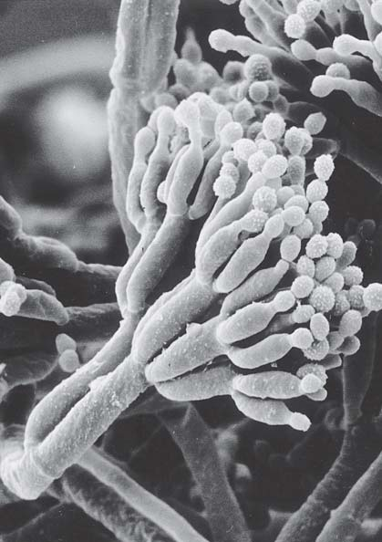
Los hongos 613
Los ascomicetos producen esporas asexuales llamadas conidias y esporas sexuales llamadas ascosporas.
ETAPA HAPLOIDE ( n )
ETAPA DIPLOIDE (2 n )
REPRODUCCIÓN ASEXUAL (mediante conidias)
REPRODUCCIÓN SEXUAL
Meiosis
Cariogamia
Tipo de apareamiento (+)
Tipo de apareamiento (–)
Conidióforos
Conidias
Germinación de conidio
Haploide ( n )
Migración de núcleos
ETAPA DICARIOTA ( n + n )
Micelio
Ascocarpo
Desarrollo de asco con núcleos n + n . Fusión de núcleos
Primera división meiótica
Segunda división meiótica
El asco maduro tiene ocho ascosporas haploides
Cigoto
Plasmogamia
Micelios haploides con tipos de reproducción opuestos producen hifas sexuales cenocíticas.
Formación de hifas dicariotas y producción de ascos.
Ocurre meiosis y se forman cuatro núcleos haploides.
Conforme las hifas de los dos tipos de apareamiento se fusionan e intercambian núcleos, ocurre plasmogamia.
Las hifas forman un ascocarpo.
La mitosis produce ocho núcleos haploides.
En cada asco se produce cariogamia. Dos núcleos haploides se fusionan y forman un núcleo de cigoto diploide.
Cada núcleo se incorpora en una ascospora.
Cuando se liberan, las ascosporas germinan y forman nuevos micelios haploides.
En la reproducción asexual, las hifas producen conidias haploides que pueden crecer hasta ser nuevos micelios.
Quitridiomicetos
Cigomicetos
Ascomicetos
Basidiomicetos
Glomeromicetos
Ancestro común flagelado
1
2
3
4
5
6
7
8
9
10
FIGURA 29-13 Ciclo de vida de un ascomiceto heterotálico típico La reproducción sexual requiere micelios haploides de diferentes tipos de apareamiento. Observe la etapa dicariota y la separación de plasmogamia y cariogamia. Los pasos del 5 al 8 tienen lugar dentro de un asco y en el ascocarpo.
PUNTO CLAVE
614 Capítulo 29
Muchos basidiomicetos producen “anillos de hada” en prados y bosques ( FIGURA 29-18 de la página 617). Un anillo de hada puede aparecer primero como un anillo verde oscuro rodeando un círculo interior pardusco. El tamaño del anillo varía de algunos centímetros a más de 15 m de diámetro. El anillo verde consiste en césped, bien nutrido por los nutrientes liberados conforme los hongos descomponen material orgánico. El césped muere y produce el círculo interior pardo, porque la masa de micelios disminuye el movimiento de agua en el área. Conforme los hongos crecen hacia afuera, el círculo se ensancha. Los anillos crecen de algunos centímetros a más de un metro por año. Después de las lluvias
forman núcleos de cigoto diploides. Éstas son las únicas células diploides que se forman durante el ciclo de vida de un basidiomiceto. Luego ocurre meiosis y forma cuatro núcleos haploides con diferentes genotipos. Estos núcleos se mueven hacia el borde exterior del basidio. Se desarrollan extensiones del basidio con forma de dedos, hacia los cuales se mueven los núcleos y algo de citoplasma; cada una de estas extensiones se convierte en una basidiospora. Para separar la basidiospora del resto del basidio se forma un septo mediante un delicado pie que se rompe cuando la basidiospora se descarga con fuerza. Cada basidiospora puede germinar y dar lugar a un micelio primario.
- El ascocarpo (cuerpo fructífero) de la cazoleta común ( Peziza badioconfusa ). Esta ascocarpo tiene forma de tazón y mide de 3 a 10 cm de ancho. Se encuentra en suelo húmedo en bosques a lo largo de América del Norte. Fotografiado en Muskegon, Michigan.
© Ed Reschke
- Ascos. Cada asco contiene ocho ascosporas. Los ascos recubren la porción interior del ascocarpo.
100 μ m
© Robert and Linda Mitchell
FIGURA 29-14 Animada Reproducción sexual en los ascomicetos
- Basidios recubren las láminas de la seta del olivo ( Omphalotus olearius ). Las láminas de esta especie venenosa producen un brillo verdoso en la oscuridad. Cada sombrero mide aproximadamente 15 cm de ancho. Fotografiado en la base de un roble en Maryland, la seta del olivo ocurre a lo largo del este de América del Norte y California.
Cengage
FIGURA 29-15 Cuerpos fructíferos de basidiomicetos
▲
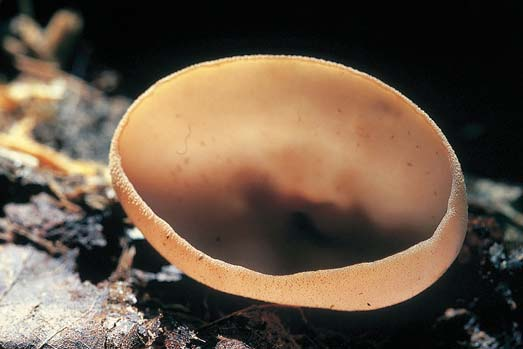
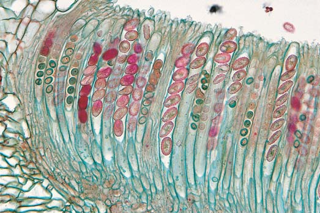
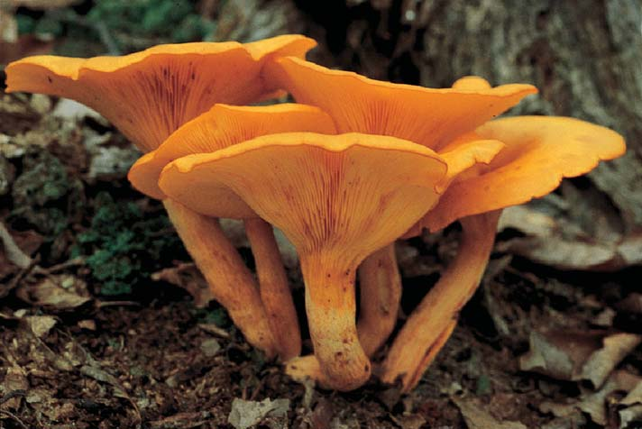
Los hongos 615
chos y organismos muertos, liberan agua, carbono (como CO 2 ) y componentes minerales de compuestos orgánicos, y estos elementos se reciclan (vea los ciclos biogeoquímicos en el capítulo 55). Sin esta descomposición continua, los nutrientes esenciales permanecerían encerrados en enormes cúmulos de esqueletos animales, heces, ramas, troncos y hojas. Dichos nutrientes no estarían disponibles para su uso por las nuevas generaciones de organismos, y la vida fi nalmente cesaría. Los hongos forman importantes relaciones simbióticas con animales, plantas, bacterias y protistas. Recientemente se reportó una relación simbiótica de tres vías que involucra un hongo, un huésped y un virus. En los manantiales geotérmicos del Parque Nacional Yellowstone, un hongo infecta las raíces del césped huésped. Cuando se infecta con un virus específi co, el hongo es tolerante al calor y confi ere tolerancia al calor al césped. Cuando no se infecta por el virus, el hongo no confi ere tolerancia al calor. Las relaciones simbióticas de los hongos con otros organismos tienen importantes efectos sobre los ecosistemas.
Los hongos forman relaciones simbióticas con algunos animales
Puesto que los animales no tienen las enzimas necesarias para digerir celulosa y lignina, el ganado vacuno y otros animales de pastoreo no pueden, por ellos mismos, obtener los nutrientes necesarios del material vegetal que comen. Su
o irrigación, puede aparecer un anillo de setas justo afuera del círculo verde. El nombre “anillo de hada” proviene de una leyenda de que un anillo de setas aparece donde las hadas bailaron en círculo la noche anterior.
Repaso
■ ¿Qué evidencia apoya la hipótesis de que los quitridiomicetos fueron el grupo fúngico más primitivo en evolucionar a partir del ancestro común de los hongos?
■ ¿Cuáles son las características distintivas de cada uno de los siguientes grupos fúngicos: (1) cigomicetos, (2) glomeromicetos, (3) ascomicetos y (4) basidiomicetos?
■ ¿Cómo difi eren el ciclo de vida de un basidiomiceto típico y el de un ascomiceto típico? (Dibuje diagramas para apoyar su respuesta).
■ Distinga entre (1) ascocarpo, asco y ascospora, y entre (2) basidiocarpo, basidio y basidiospora.
29.4 IMPORTANCIA ECOLÓGICA DE LOS HONGOS
OBJETIVOS DE APRENDIZAJE
7 Resumir la importancia ecológica de los hongos como descomponedores. 8 Describir el importante papel ecológico de las micorrizas. 9 Caracterizar la naturaleza única de un liquen.
Los hongos realizan aportaciones vitales al equilibrio ecológico del planeta. Como las bacterias, la mayoría de los hongos son descomponedores de vida libre, quimioheterótrofos que absorben nutrientes de desechos orgánicos y organismos muertos. Por ejemplo, muchos descomponedores fúngicos degradan celulosa y lignina, los principales componentes de las paredes celulares de las plantas. Cuando los hongos degradan dese-
FIGURA 29-16 Dibujo de un basidio Cada basidio produce cuatro basidiosporas.
- El elegante tiene un olor desagradable que atrae a las moscas. Las moscas ayudan a dispersar la masa mucilaginosa de basidiosporas. Los cuerpos fructíferos de los Phallus ravenelii crecen hasta 18 cm de alto. Fotografiado en Pensilvania.
Richard D. Poe/Visuals Unlimited
Phallus ravenelii
- Cola de pavo ( ) es un hongo de repisa común. Los hongos de repisa crecen tanto en árboles muertos como vivos, y producen cuerpos fructíferos en forma de repisas. Las basidiosporas se producen en poros ubicados abajo de cada repisa.
J. L. Lepore/Photo Researchers, Inc.
Trametes versicolor
Basidiospora
Basidio
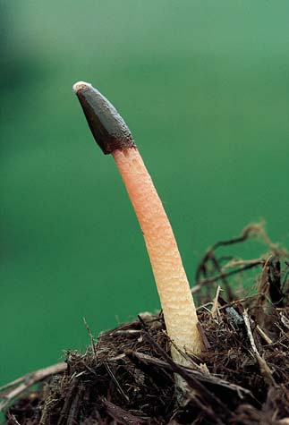
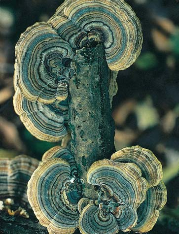
616 Capítulo 29
Los basidiomicetos producen basidiosporas sexuales en las láminas de basidiocarpos (cuerpos fructíferos).
2 La plasmogamia de micelios primarios ocurre con la fusión de dos hifas ( n ) de diferentes tipos de apareamiento.
3 Se produce micelio secundario de rápido crecimiento, compuesto de hifas dicariotas ( n + n ).
4 En el micelio secundario periódicamente se forman basidiocarpos.
5 A lo largo de las láminas de los basidiocarpos se forman basidios. En cada basidio ocurre cariogamia, lo que produce un núcleo de cigoto.
6
7
Ocurre meiosis y se producen cuatro núcleos haploides que se convierten en basidiosporas
1 Las basidiosporas germinan y forman micelios primarios.
Quitridiomicetos
Cigomicetos
Ascomicetos
Basidiomicetos
Glomeromicetos
Ancestro común flagelado
ETAPA HAPLOIDE ( n )
ETAPA DIPLOIDE (2 n )
Formación de basidiosporas
Liberación de basidiosporas
ETAPA DICARIOTA ( n + n )
Basidiocarpo
Micelio secundario
Láminas
Cigoto
Primera división meiótica
Segunda división meiótica
Meiosis
Cariogamia
Plasmogamia
FIGURA 29-17 Animada Ciclo de vida de un basidiomiceto típico Observe la etapa dicariota y la separación de plasmogamia y cariogamia. Los pasos 5 y 6 tienen lugar dentro de los basidios del basidiocarpo. La reproducción asexual es rara en este grupo.
PUNTO CLAVE
Los hongos 617
se agrega al suelo alrededor de estos árboles, rápidamente reanudan su crecimiento normal. Estudios realizados con varios tipos de plantas, incluido el cedro, confi rman el papel de las micorrizas en el crecimiento de las plantas ( FIGURA 29-19 ). Como se estudió, los glomeromicetos forman conexiones endomicorrizas ; infi ltran las células de las raíces de las plantas. Al menos 5000 especies de ascomicetos y basidiomicetos también forman conexiones micorrizas, pero sus hifas recubren la raíz de la planta en lugar de penetrar sus células. A ellas se les conoce como ectomicorrizas . De manera interesante, investigadores han demostrado que algunos hongos micorrizos albergan bacterias en su citoplasma. Aunque el papel de la bacteria todavía no es claro, su presencia sugiere que pueden ser miembros de una asociación tripartita: hongo, planta y bacteria. Los hongos micorrizos conectan plantas, lo que permite la transferencia de nutrientes entre ellas. Científi cos han medido el movimiento de materiales orgánicos de una especie de árbol hacia otra a través de conexiones micorrizas compartidas. Los hongos micorrizos también liberan químicos que protegen la planta contra herbívoros y patógenos. Las micorrizas mejoran el suelo al reducir la pérdida de agua y la erosión. Los ecólogos estudian el papel de los hongos micorrizos en la recuperación de suelos dañados por contaminación. Por ejemplo, las micorrizas pueden modifi car metales pesados tóxicos, como el cadmio, de modo que las plantas no puedan absorberlos.
Un liquen consta de dos componentes: un hongo y un fotoautótrofo
Aunque un liquen parece un organismo simple, en realidad es un organismo dual, una combinación de un hongo y un fotoautótrofo ( FIGURA
29-20a ). Casi un quinto de todas las especies de hongos conocidas forman estas relaciones simbióticas. Se han descrito aproximadamente 14,000 tipos de líquenes. Los fósiles sugieren que los hongos desarrollaron asociaciones simbióticas con fotoautótrofos antes de la evolución de las plantas vasculares. El componente fotoautotrófi co de un liquen es o una alga verde, o una cianobacteria o ambos. El hongo es más frecuentemente un ascomiceto, aunque en algunos líquenes tropicales el participante fúngico es un basidiomiceto. La mayoría de los organismos fotoautotrófi cos que se encuentran en los líquenes también ocurren como especies de vida libre en la naturaleza, pero los componentes fúngicos por lo general sólo se encuentran como parte del liquen. Usualmente, el hongo forma la mayor parte del talo (cuerpo) del liquen. El hongo rodea cientos de participantes fotosintéticos y los mantiene en su lugar. Los líquenes se nombran por el componente fúngico. En el laboratorio, los investigadores pueden aislar los componentes fúngico y fotoautótrofo de algunos líquenes y cultivarlos por separado en medios de cultivo adecuados. El fotoautótrofo crece más rápido cuando se separa, mientras que el hongo crece más lentamente y requiere muchos carbohidratos complejos. Ningún organismo tiene apariencia de liquen cuando crece por separado. El fotoautótrofo y el hongo pueden reunirse como un talo de liquen, pero sólo si se colocan en un medio de cultivo bajo condiciones que no pueden sostener a alguno de ellos de manera independiente. ¿Cuál es la naturaleza de esta asociación? El liquen originalmente se consideró un ejemplo defi nitivo de mutualismo. El fotoautótrofo realiza fotosíntesis y produce compuestos de carbono ricos en energía para ambos miembros del liquen. No es claro cómo el fotoautótrofo se benefi cia de la relación. Algunos biólogos sugieren que el fotoautótrofo obtiene agua y minerales nutrientes del hongo, así como protección contra la desecación. Más recientemente, investigadores sugirieron que la
supervivencia depende de los hongos que habitan sus intestinos porque los hongos, como muchos otros microorganismos, tienen las enzimas que descomponen estos compuestos orgánicos. Los hongos se benefi cian al vivir en un ambiente rico en nutrientes. Los hongos también forman asociaciones simbióticas con hormigas y termitas. Más de 200 especies de hormigas cultivan hongos. Las hormigas cortadoras de hojas llevan hojas a sus hongos y los protegen de competidores y depredadores. Las hormigas también dispersan los hongos hacia nuevas ubicaciones. A cambio de esto, los hongos digieren las hojas y proporcionan nutrientes a las hormigas. Esta simbiosis puede involucrar a otros organismos. Los hongos cultivados pueden infectarse con parásitos fúngicos. En respuesta, las hormigas cultivan bacterias (actinomicetos) que producen antibióticos para controlar estos parásitos. Estas relaciones simbióticas, las más complejas conocidas, son el producto de 50 millones de años de coevolución.
Las micorrizas son asociaciones simbióticas entre hongos y raíces de las plantas
Las micorrizas ocurren aproximadamente en el 80% de las plantas (y más del 90% de todas las familias de plantas). Como se estudió en la sección acerca de los glomeromicetos, los hongos micorrizos descomponen material orgánico en el suelo y aumentan el área superfi cial de las raíces de una planta, de modo que ésta puede absorber más agua y nutrientes minerales. A cambio, las raíces brindan a los hongos nutrientes orgánicos. Para establecer y mantener una relación simbiótica, las células de los hongos y las células de las raíces de la planta deben comunicarse. Por ejemplo, moléculas señalizadoras de las células de la raíz de la planta estimulan las células fúngicas para cambiar a una fase de crecimiento presimbiótico en la que su metabolismo energético aumenta y sus hifas se ramifi can. Entonces las células fúngicas señalan a las células radicales, y activan una ruta de señalización que activa la expresión génica en las células de la raíz. La importancia de las micorrizas se volvió aparente por primera vez cuando los horticultores observaron que las orquídeas no crecen a menos que un hongo adecuado viva con ellas. De igual modo, muchos árboles del bosque, como los pinos, declinan y a la larga mueren por defi ciencias de minerales cuando se trasplantan a suelos de pastizal ricos en minerales que carecen de los hongos micorrizos adecuados. Cuando el suelo del bosque que contiene los hongos adecuados o sus esporas
FIGURA 29-18 Un anillo de hada
Wally Eberhart/Visuals Unlimited, Inc.
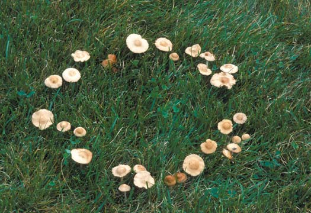
618 Capítulo 29
muchos kilómetros cuadrados de terreno con un crecimiento hasta los tobillos. El crecimiento procede lentamente; el radio de un liquen puede aumentar en menos de 1 mm cada año. Se considera que algunos líquenes maduros tienen cientos de años de edad. Los líquenes absorben minerales del aire, agua de lluvia y la superfi cie sobre la que crecen. No pueden excretar los elementos que absorben, y tal vez por esta razón son extremadamente sensibles a los compuestos tóxicos. Esta sensibilidad se reportó por primera vez en 1866, por parte de un biólogo fi nés quien observó que los líquenes que crecían en París tenían un desarrollo malo o eran estériles. Dedujo que los líquenes podían usarse para medir la pureza del aire. En la actualidad, la reducción en el crecimiento de líquenes se utiliza como un indicador sensible de la contaminación del aire, en particular por dióxido de azufre. En un estudio, investigadores demostraron una relación entre cáncer de pulmón y contaminación del aire al comparar las ubicaciones de baja biodiversidad de líquenes (y por tanto de contaminación de aire) con las ubicaciones de las muertes por cáncer de pulmón en varones jóvenes. El regreso de los líquenes a un área indica una mejora en la calidad del aire. Los líquenes se reproducen principalmente por medios asexuales, por lo general mediante fragmentación, un proceso en el que unidades especiales de dispersión del liquen, llamadas soredios , se separan y, si aterrizan en una superfi cie adecuada, se establecen como nuevos líquenes. Los soredios contienen células de ambos progenitores. En algunos líquenes, el hongo produce ascosporas, que pueden dispersarse con el viento y encontrar un compañero alga adecuado sólo por azar.
asociación del liquen en realidad no es un caso de mutualismo, sino de parasitismo controlado del fotoautótrofo por parte del hongo. Los líquenes usualmente muestran una de tres formas diferentes de crecimiento mostrados en la FIGURA 29-20b . Los Crustose lichens son planos y crecen apretados contra su sustrato (la superfi cie sobre la que crecen). Foliose lichens también son planos, pero tienen lóbulos con forma de hoja y no se oprimen tanto al sustrato. Fructicose lichens crecen erguidos y tienen muchas ramas. Capaces de tolerar extremos de temperatura y humedad, los líquenes crecen en casi todos los ambientes terrestres excepto en ciudades contaminadas. Existen mucho más al norte que cualquier planta de la región ártica y están igualmente como en casa en la vaporosa pluviselva ecuatorial. Crecen sobre corteza de árbol, hojas y superfi cies rocosas expuestas, desde lava solidifi cada hasta lápidas. De hecho, los líquenes con frecuencia son los primeros organismos en habitar áreas rocosas. Segregan ácido que gradualmente labra pequeñas hendiduras en la roca, lo que libera minerales. Este proceso monta el escenario para mayor desintegración de la roca por el viento y la lluvia. Cuando los líquenes mueren y se descomponen, se vuelven parte del suelo. El musgo caribú o musgo asta de ciervo ( Cladonia rangiferina ) de la región ártica, que sirve como la principal fuente alimenticia para las manadas migratorias de caribúes, en realidad son líquenes, no musgos. Algunos líquenes producen pigmentos coloridos. Uno de ellos, la orceína, se usa para dar color a la lana, y otro, el tornasol, se usa ampliamente en laboratorios de química como indicador ácido-base (pH). Los líquenes varían enormemente en tamaño. Algunos son casi invisibles, mientras que otros, como el musgo caribú, pueden abarcar
EXPERIMENTO CLAVE
PREGUNTA : ¿El crecimiento de la planta es afectado por hongos en el suelo?
HIPÓTESIS: En suelos bajos en fósforo, las plantas que forman asociaciones micorrizas con hongos muestran mejora en el crecimiento.
EXPERIMENTO: Para este estudio se seleccionó la tuya gigante ( Thuja plicata ). Se criaron plántulas de control en suelo bajo en fósforo en ausencia del hongo. Plántulas experimentales de la misma edad que las plantas de control se cultivaron bajo las mismas condiciones que los controles, excepto que sus raíces formaron asociaciones micorrizas.
Sin asociaciones micorrizas. Plántulas de control crecieron en suelo bajo en fósforo en ausencia del hongo.
Asociaciones micorrizas. Plántulas experimentales crecieron bajo las mismas condiciones que los controles, excepto que el hongo estuvo presente. Las plántulas formaron asociaciones micorrizas con el hongo.
Courtesy of Randy Molina, U.S. Forest Service
Courtesy of Randy Molina, U.S. Forest Service
RESULTADOS Y CONCLUSIONES: El crecimiento de las plantas que formaron asociaciones micorrizas mejoró signifi cativamente. Las asociaciones micorrizas mejoran el crecimiento de la tuya gigante. Muchos estudios similares con otros tipos de plantas y otros tipos de suelo confi rmaron la importancia de la asociación micorriza con el crecimiento de la planta.
FIGURA 29-19 El efecto de las micorrizas en plántulas de tuya gigante ( Thuja plicata )
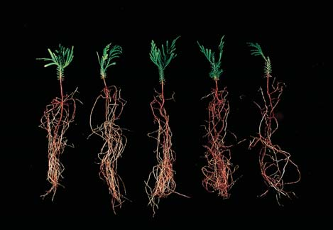
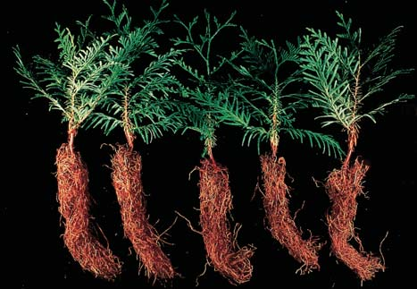
Los hongos 619
año daños incalculables a los bienes almacenados y materiales de construcción. Los hongos de repisa, por ejemplo, causan enormes pérdidas al descomponer madera, tanto de árboles vivos como de madera almacenada. Algunos hongos causan serias enfermedades en animales y plantas. Sin embargo, los hongos también afectan la calidad de vida de los humanos, pues son responsables tanto de ganancias como de pérdidas económicas. Las personas se alimentan con ellos y los cultivan para elaborar varios medicamentos, como la penicilina. Se los usa para fabricar ciertos químicos industriales y para biorremediación. Las compañías de combustibles renovables buscan en forma activa hongos y otros microbios que puedan producir combustible. Recientemente, se descubrió un hongo que sintetiza 55 hidrocarburos, al inhibir el crecimiento de otros organismos. Los investigadores pueden usar los genes de este hongo para modifi car otros microorganismos y hacerlos más efi cientes en la producción de combustible.
Los hongos proporcionan bebidas y alimentos
Los humanos explotan la capacidad de las levaduras para producir pan y bebidas alcohólicas. Las levaduras producen alcohol etílico y dióxido de carbono a partir de la glucosa y otros azúcares mediante fermentación (vea el capítulo 8). Especies de levaduras del género Saccharomyces (ascomicetos) se usan para producir vino, cerveza y otras bebidas fermentadas. El vino se produce cuando las levaduras fermentan fructosa, y la cerveza resulta
Repaso
■ ¿Cuál es la importancia ecológica de los descomponedores fúngicos?
■ ¿Cuál es la importancia de las micorrizas?
■ ¿Qué es un liquen?
29.5 REPERCUSIÓN ECONÓMICA, BIOLÓGICA Y MÉDICA DE LOS HONGOS
OBJETIVOS DE APRENDIZAJE
10 Resumir algunas formas específi cas en que los hongos repercuten económicamente en los humanos. 11 Resumir la importancia de los hongos para la biología y la medicina; describir cómo los hongos infectan plantas y humanos, y describir al menos una enfermedad animal fúngica y una enfermedad vegetal fúngica.
Las mismas poderosas enzimas digestivas que usan los hongos para descomponer desechos y organismos muertos también pueden usarse con gran efi ciencia para reducir madera, fi bra y alimentos a sus componentes básicos. Muchas especies de basidiomicetos tienen enzimas que descomponen la lignina de la madera. (La lignina es el segundo compuesto orgánico más abundante sobre la Tierra, sólo después de la celulosa). Desde la perspectiva humana, varios hongos causan cada
Soredios
Capa superficial (hifas fúngicas)
Hifas fúngicas entremezcladas con fotoautótrofo
Hifas mezcladas débilmente
Capa profunda (hifas fúngicas) Roca u otra superficie donde se adhieren los líquenes
Liquen fruticuloso ( Ramalina )
Líquenes crustáceos ( Bacidia, Lecanora )
Liquen folioso ( Parmelia )
Esta sección transversal de un liquen típico muestra distintas capas. Los soredios, una estructura reproductora asexual, consisten en grupos de células de algas o cianobacterias encerradas por hifas fúngicas.
Los líquenes varían en color, forma y apariencia global. Se muestran tres formas de crecimiento (crustácea, foliosa y fruticulosa).
Fred M. Rhoades
FIGURA 29-20 Animada Líquenes Estos organismos son una combinación de hongo y alga o cianobacteria.
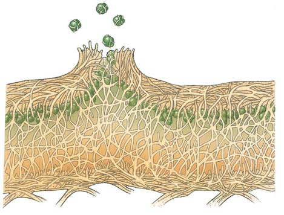
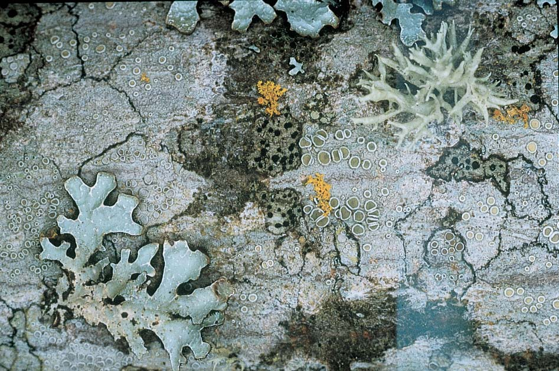
620 Capítulo 29
tóxicas de este género han recibido nombres adecuados como “ángel destructor” ( A. virosa ) y “sombrero de la muerte” ( A. phalloides ). Comer una sola seta de alguna de estas especies puede ser mortal. Ciertas especies de setas causan intoxicación y alucinaciones. Las setas sagradas de los aztecas, Conocybe y Psilocybe , todavía se usan en ceremonias religiosas de poblaciones nativas de América Central por sus propiedades alucinógenas. El ingrediente químico psilocibina es responsable de los trances y visiones experimentados por quienes comen estas setas. La ingestión de setas psicoactivas es peligrosa pues las reacciones negativas varían considerablemente, desde indigestión leve, sudoración y palpitaciones, hasta la muerte. Además, la posesión y uso de estas setas es ilegal en Estados Unidos y otros países.
Los hongos son importantes para la biología y la medicina modernas
La levadura Saccharomyces cerevisiae ha servido como célula eucariota modelo (vea la fi gura 17-6a). Fue la primera eucariota cuyo genoma se secuenció y, con sus 6000 genes, tiene el genoma más pequeño de cualquier organismo eucariota modelo. Los biólogos moleculares están en el proceso de determinar las funciones de las proteínas codifi cadas por sus genes. Los biólogos usan S. cerevisiae para estudiar genética molecular, incluida la forma en cómo los genes regulan la división celular. Los investigadores siguen usando esta levadura para estudiar problemas como la recombinación genética, y la correlación entre edad celular y cáncer. Saccharomyces cerevisiae también se usa para estudiar el mecanismo de acción de los medicamentos antimicóticos y la resistencia a dichos medicamentos. Los biólogos han usado el ascomiceto Aspergillus nidulans , un patógeno oportunista de los humanos, para estudiar mitosis y otros procesos celulares. Este hongo brinda valioso conocimiento acerca de la genética de los microtúbulos. Los biólogos utilizan técnicas de ADN recombinante para manipular levaduras y ciertos hongos fi lamentosos para producir importantes moléculas biológicas, como las hormonas. Entre los muchos genes clonados en la levadura están los de la insulina, la hormona de crecimiento humano y moléculas importantes en la función inmunológica. Estos procedimientos permiten a los investigadores pro-
cuando las levaduras fermentan azúcar derivada del almidón en los granos (por lo general cebada). Saccharomyces cerevisiae , conocida como levadura del panadero, se usa para preparar pan, pizza y otros productos de trigo. Durante el proceso de elaboración del pan, el dióxido de carbono producido por la levadura queda atrapado en la masa como burbujas, lo que hace que la masa “suba”; esto otorga al pan con levadura su calidad ligera. Tanto el dióxido de carbono como el alcohol producidos por la levadura escapan durante la cocción. El sabor único de quesos como Roquefort, Brie, Gorgonzola y Camembert se produce por especies de Penicillium . Por ejemplo, P. roquefortii , que se encuentra en cuevas cerca de la villa francesa de Roquefort, se usa para elaborar queso Roquefort. Por ley francesa, sólo los quesos producidos en esta área pueden llamarse queso Roquefort. (Las manchas azules en el Roquefort y otros quesos son masas de conidias). Aspergillus tamarii y otros hongos se usan para producir salsa de soya al fermentar frijol de soya con los hongos durante por lo menos tres meses. (En Estados Unidos la salsa de soya usualmente se elabora al agregar saborizante a agua salada, en lugar de remojar el frijol de soya fermentado). La salsa de soya enriquece otros alimentos con algo más que sólo su sabor especial. También agrega aminoácidos vitales tanto de los frijoles de soya como de los mismos hongos lo que, en algunas partes del mundo, complementa una dieta de arroz baja en proteínas. Entre los basidiomicetos, existen unos 200 tipos de setas comestibles y alrededor de 70 especies de setas venenosas. Muchas setas comestibles se cultivan de manera comercial. La seta Agaricus brunnescens es la principal especie fúngica que se cultiva ampliamente para alimento. Alrededor de otras 30 especies de setas, como el champiñón ostra, el shiitake, el portobello y el hongo de la paja, están disponibles en superme rcados. Las colmenillas, que superfi cialmente parecen setas, y las trufas, que producen cuerpos fructíferos subterráneos, son ascomicetos ( FIGURA 29-21 ). Las trufas ahora se cultivan como hongos micorriza en las raíces de plántulas de árboles. Las setas comestibles y las venenosas pueden ser muy parecidas, e incluso muchas pertenecen al mismo género. No hay una forma sencilla de decir cuál es cuál; debe identifi carlas un experto. Algunas de las setas más venenosas pertenecen al género Amanita ( FIGURA 29-22 ). Especies
- Trufa blanca de Oregon ( Tuber gibbosum ). La trufa, que se encuentra bajo tierra cerca de abetos de Douglas y posiblemente robles en Columbia Británica y al norte de California, mide de 1 a 5 cm de ancho. Las personas encuentran estos ascocarpos subterráneos con la ayuda de perros o cerdos entrenados. Aquí, las trufas se muestran enteras y seccionadas para mostrar el destacado tejido blanco marmoleado.
John D. Cunningham/Visuals Unlimited
- Colmenilla amarilla ( ). Esta colmenilla crece de 6 a 10 cm de alto. Se encuentra a lo largo de América del Norte. Fotografiada en Michigan.
Richard Shiell/Dembinsky Photo Associates
Morchella esculenta
FIGURA 29-21 Ascomicetos comestibles
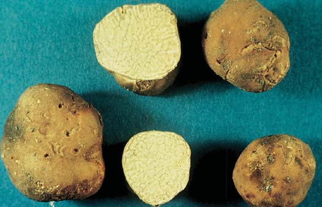
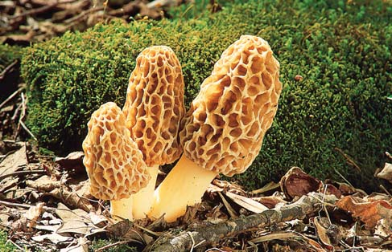
Los hongos 621
Los hongos se usan en biorremediación y para el control biológico de plagas
Algunos hongos pueden biodegradar pesticidas, herbicidas, alquitrán de hulla y petróleo. Los hongos convierten estos productos en dióxido de carbono y los elementos básicos de los que están compuestos. Estos hongos pueden usarse junto con ciertas bacterias para descontaminar tierras de cultivo y para limpiar derrames de petróleo. Los investigadores estudian hongos (por ejemplo, ciertas especies de microsporidios) para el control biológico de patógenos y plagas de insectos. Algunas de estas especies ya se usan para parasitar plagas de insectos. En algunos casos interfi eren con la reproducción en su huésped insecto. Otros microsporidios controlan por completo el metabolismo y reproducción del huésped. Los investigadores estudian el uso de microsporidios en el control de la dispersión de la malaria. Un estudio reciente demostró que, cuando la hembra de los mosquitos Anopheles se infectan con microsporidios, disminuye su alimentación con sangre. La infección fúngica del mosquito también interfi ere con el desarrollo de Plasmodium , el protista que causa malaria.
Algunos hongos causan enfermedades en humanos y otros animales
Ciertos ascomicetos causan infecciones superfi ciales en las que sólo se infectan piel, cabello o uñas. Las tiñas y el pie de atleta son ejemplos de infecciones micóticas superfi ciales. Puesto que estos hongos infectan capas muertas de piel que no se alimentan por capilares, el sistema inmunológico no puede lanzar una respuesta efectiva. Muchos hongos patógenos son oportunistas que causan infecciones sólo cuando el sistema inmunológico del cuerpo está comprometido, por ejemplo, en pacientes con VIH. Los pacientes cancerosos y los receptores de trasplante de órgano a quienes les administran medicamentos para suprimir sus sistemas inmunológicos también están en riesgo. Candida es un ascomiceto que habita la boca y vagina humanas. El sistema inmunológico y las bacterias normales de estas regiones por lo general evitan que esta levadura cause infección. Sin embargo, cuando el sistema inmunológico está comprometido, Candida se multiplica y causa candidiasis, una dolorosa infección por levaduras en boca, garganta y vagina. El ascomiceto Aspergillus fumigatus usualmente es inocuo pero causa aspergillosis en personas con función inmunológica disminuida. Durante el curso de la aspergillosis, el hongo puede invadir pulmones, corazón, cerebro, riñones y otros órganos vitales y causar la muerte. Otros hongos infectan tejidos y órganos internos y pueden dispersarse a través de muchas regiones del cuerpo. Por ejemplo, la histoplasmosis es una infección pulmonar causada por inhalar esporas de un hongo común en suelo contaminado con heces de aves. La mayoría de las personas en el este y medio oeste de Estados Unidos han estado expuestas a este hongo en algún momento, y un estimado de 40 millones de estadounidenses ha tenido infecciones leves. Por fortuna, la infección usualmente se confi na a los pulmones y es de corta duración, pero si la infección se extiende a través de la sangre hacia el corazón, cerebro u otras partes del cuerpo, puede ser severa y en ocasiones mortal. Algunos hongos producen compuestos venenosos llamados de manera colectiva micotoxinas . Algunas especies de Aspergillus , por ejemplo, producen potentes micotoxinas llamadas afl atoxinas que dañan el hígado y son carcinógenos conocidos. Los alimentos sobre los que usualmente crecen los hongos productores de afl atoxina incluyen cacahuates, pacana, maíz y otros granos. Otros alimentos que pueden contener rastros de afl atoxinas incluyen productos animales como leche, huevos y carne (de animales que consumieron alimento contaminado
ducir cantidades ilimitadas de estos compuestos para estudio y eventual uso médico. Los hongos producen medicamentos y químicos útiles. Alexander Fleming, bacteriólogo británico, descubrió en 1928 la penicilina, producida por el moho Penicillium notatum , y que todavía se encuentra entre los antibióticos más efectivos y de mayor uso (vea el capítulo 1). Otros medicamentos derivados de los hongos incluyen los antibióticos cefalosporinas (producidas por Cephalosporium ), estatinas (que se usan para bajar los niveles del colesterol sanguíneo) y las ciclosporinas (utilizadas para suprimir respuestas inmunológicas en pacientes que reciben trasplantes de órganos). La fumagilina, un químico producido por el ascomiceto Aspergillus fumigatus , inhibe la formación de nuevos vasos sanguíneos. Puesto que los tumores sólidos necesitan un suministro rico en sangre, la fumagilina resulta prometedora como agente anticancerígeno. La fumagilina también se usa para tratar enfermedades causadas por microsporidios. Los investigadores han identifi cado muchos otros compuestos prometedores producidos por hongos que son antivirales o que destruyen células cancerosas. El ascomiceto Claviceps purpurea infecta las fl ores de plantas de centeno y otros cereales. Produce una estructura llamada cornezuelo donde usualmente se formaría una semilla en la cabeza del grano. Cuando el ganado come este grano o cuando los humanos comen pan elaborado con harina de centeno contaminada con cornezuelo, pueden envenenarse por las sustancias extremadamente tóxicas en el cornezuelo. Sin embargo, algunos compuestos del cornezuelo se usan ahora clínicamente en pequeñas cantidades como medicamentos para inducir partos, para detener el sangrado uterino, tratar la presión arterial alta y aliviar un tipo de migraña.
James W. Richardson/CBR Images
FIGURA 29-22 Setas venenosas El ángel destructor ( Amanita virosa ) es una seta extremadamente venenosa que se distingue, como otras amanitas, por el anillo de tejido alrededor de su pie y por la taza subterránea de la que sobresale el pie. Aproximadamente 50 g de esta seta pueden matar a un hombre adulto. El ángel destructor, que mide de 7.5 a 20 cm de alto, se encuentra en céspedes o cerca de árboles a lo largo de América del Norte.
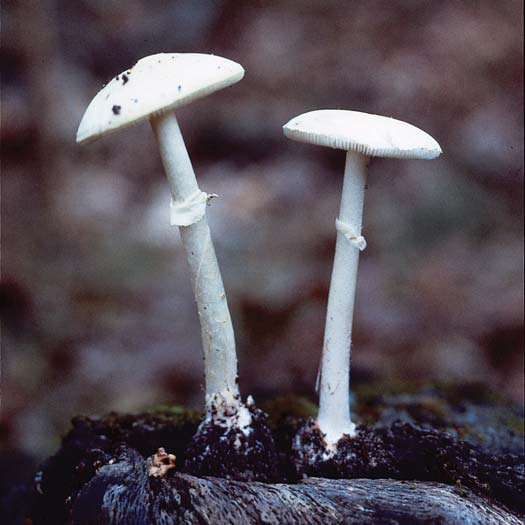
622 Capítulo 29
Con frecuencia, una planta se infecta después de que hifas entran a través de estomas (poros) en la hoja o el tallo o a través de heridas en el cuerpo de la planta ( FIGURA 29-23 ). Alternativamente, el hongo puede producir cutinasa , una enzima que disuelve la cutícula cerosa que cubre la superfi cie de hojas y tallos. Después de disolver la cutícula, el hongo fácilmente invade los tejidos de la planta. Conforme el micelio crece, puede permanecer principalmente entre las células de la planta o puede penetrar las células. Los hongos parásitos por lo común producen ramas hifales especiales llamadas haustorios que penetran las células huésped y obtienen nutrición del citoplasma. Los ascomicetos causan serias enfermedades vegetales, incluidas mildiú, chancro del castaño, enfermedad holandesa del olmo, roña del manzano, marchitación en papas y podredumbre parda, que ataca cerezas, duraznos, ciruelas y albaricoques ( FIGURA 29-24a ). Los basidio-
por afl atoxina). Evitar la afl atoxina en la dieta es imposible, pero la exposición debe minimizarse tanto como sea posible. Cualquier producto de alimento humano o forraje animal que se ponga mohoso debe considerarse como contaminado con afl atoxina y desecharse. Los hongos contribuyen al síndrome del edifi cio enfermo, una situación en la que los ocupantes de un edifi cio experimentan agudos efectos adversos de salud ligados con el tiempo que pasan en un edifi cio dado. Las indemnizaciones de seguros relacionados con mohos representan cientos de millones de dólares cada año. Cuando las condiciones son húmedas, los mohos pueden crecer sobre alfombras, piel, ropa, madera, aislante y alimento. Las esporas, fragmentos y productos de mohos llegan al aire, y las personas están expuestas a través de la inhalación, así como por contacto con la piel. La exposición a mohos y sus toxinas se vincula con una función inmunológica deprimida, irritación de la garganta y las vías respiratorias, infección y toxicidad. Las respuestas más comunes a la exposición a mohos son reacciones alérgicas que varían de enfermedades leves a severas, incluidas fi ebre de heno, sinusitis, asma y dermatitis.
Los hongos causan muchas importantes enfermedades en las plantas
Los hongos son más destructivos para las plantas que cualquier otro organismo causante de enfermedades. Son responsables de alrededor del 70% de las principales enfermedades de los cultivos. Los hongos causan serias enfermedades epidémicas que se dispersan rápidamente y con frecuencia resultan en la pérdida total de las cosechas. Las enfermedades vegetales fúngicas cuestan miles de millones de dólares en daños agrícolas cada año. Todas las plantas aparentemente son susceptibles a alguna infección fúngica. El daño puede localizarse en ciertos tejidos o estructuras de la planta, o la enfermedad puede ser sistémica y dispersarse por toda la planta. Las infecciones fúngicas pueden causar atrofi a de partes de la planta o de toda la planta; pueden causar excrecencias parecidas a verrugas o matar la planta.
Epidermis
Estoma
Espacio de aire Hoja
Haustorio
Espora Hifa
FIGURA 29-23 Cómo un hongo parasita una planta En este ejemplo, la hifa entra a la hoja a través de una estoma. La hifa crece, se ramifi ca extensamente a través de los espacios de aire internos, y penetra las células de la planta con extensiones hifales especializadas llamadas haustorios.
Podredumbre parda de duraznos. Esta enfermedad es causada por Monilinia fruticola , un ascomiceto. Fotografiado en Oregón.
Carbón del maíz en una mazorca de maíz dulce. Esta enfermedad fúngica es causada por Ustilago maydis , un basidiomiceto.
Roya negra en tallo de trigo ( Triticum sp . ). Esta enfermedad vegetal es causada por Puccinia graminis , un basidiomiceto.
Runk/Schoenberger, from Grant Heilman
Kathy Merrifield/Photo Researchers, Inc.
© Nigel Cattlin/Photo Researchers, Inc.
FIGURA 29-24 Hongos que causan enfermedades en plantas
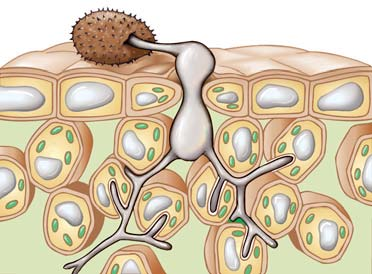
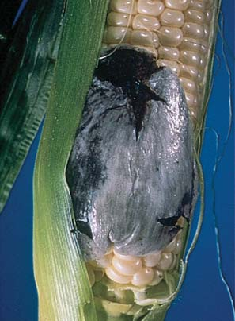
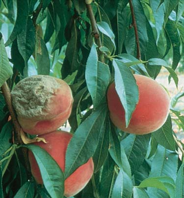
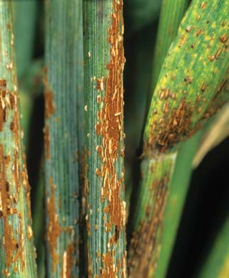
Los hongos 623
persa el hongo hacia nuevas regiones del mundo. Su dispersión puede conducir a escasez de alimento generalizada. Recientemente se secuenció el genoma de Puccinia , y los investigadores encontraron métodos para diagnosticar rápidamente la enfermedad. También trabajan para descubrir nuevas variedades de trigo resistente a la enfermedad.
Repaso
■ Algunos diccionarios erróneamente defi nen una colmenilla como un tipo de seta. ¿Por qué la defi nición es incorrecta?
■ ¿Cuál es la importancia de los hongos en la biología y medicina modernas?
■ ¿Cuáles son tres importantes enfermedades fúngicas de los humanos?
■ ¿Por qué es una seria preocupación la cepa mutada del hongo causante de la roya del trigo?
micetos causan carbones y royas que atacan maíz, trigo, avena y otros granos ( FIGURA 29-24b y c ). Algunos parásitos fúngicos, como el basidiomiceto Puccinia graminis que causa la roya negra en el tallo de trigo, tienen complejos ciclos de vida que involucran dos o más plantas huésped diferentes y la producción de varios tipos de esporas. Antes de fi nales de la década de 1950, epidemias de roya negra ocurrían cada pocos años en alguna parte del mundo, y destruían cosechas enteras de trigo. Hacia principios de la década de 1960, el ganador del Premio Nobel, Norman Borlaug y otros investigadores crearon variedades de trigo resistentes a la roya, lo que anunciaba el inicio de una revolución verde. Sin embargo, nuevas mutaciones han puesto a Puccinia y a la roya del trigo de vuelta en las noticias. La nueva cepa se dispersó a través de partes de África y en el Oriente Medio. Cada hongo libera miles de millones de esporas, que el viento puede transportar durante cientos de kilómetros, lo que dis-
■ ■ RESUMEN: ENFOQUE EN LOS OBJETIVOS DE APRENDIZAJE
29.1 (página 602)
1 Describir las características distintivas de los hongos.
■ Los hongos son heterótrofos eucariotas que segregan enzimas digestivas sobre su fuente de alimento y luego absorben el alimento predigerido. Los hongos se caracterizan por paredes celulares que contienen quitina. 2 Describir el plan corporal de un hongo.
■ Un hongo puede ser una levadura unicelular o un moho multicelular fi lamentoso. El cuerpo de la mayoría de los hongos multicelulares consisten en largos fi lamentos con forma de hilo llamados hifas que se ramifi can y forman una masa enmarañada llamada micelio .
Aprenda más acerca de los micelios al hacer clic sobre la fi gura en CengageNOW.
■ En la mayoría de los hongos septos perforados, o paredes transversales, dividen las hifas en células individuales. En algunos hongos, las hifas son cenocíticas , esto es: forman una célula multinuclear elongada.
29.2 (página 603)
3 Describir el ciclo de vida de un hongo típico, incluidas las reproducciones sexual y asexual.
■ La mayoría de los hongos se reproducen tanto sexual como asexualmente mediante esporas que se producen en hifas aéreas. Cuando las esporas fúngicas aterrizan en un lugar adecuado, germinan.
■ Cuando se unen hongos de dos diferentes tipos de apareamiento, sus hifas se fusionan, un proceso llamado plasmogamia . El citoplasma se fusiona, pero los núcleos permanecen separados. Los hongos entran en una etapa dicariótica ( n + n ) en la que cada nueva célula formada tiene un núcleo de cada tipo.
■ La cariogamia , fusión de los núcleos, tiene lugar en la punta hifal y resulta en un núcleo de cigoto diploide (2 n ).
■ La meiosis produce cuatro núcleos haploides ( n ) genéticamente diferentes. Cada núcleo se vuelve parte de una espora. Cuando las esporas germinan, forman nuevos micelios por mitosis.
■ Por mitosis se producen esporas asexuales genéticamente similares. Cuando estas esporas germinan, también se convierten en micelios.
29.3 (página 605)
4 Ofrecer argumentos para apoyar la hipótesis de que los hongos son opistocontos, más cercanamente emparentados a los animales que a las plantas.
■ Como los animales, algunos hongos tienen células fl ageladas (por ejemplo, gametos y esporas de quitridiomicetos); las células fl ageladas se impulsan ellas mismas con un solo fl agelo posterior. También como las células animales, las mitocondrias fúngicas tienen crestas parecidas a placas.
■ Con base en características químicas y estructurales, los hongos se clasifi can, junto con animales y coanofl agelados, como opistocontos . 5 Ofrecer argumentos para apoyar la hipótesis de que los quitridiomicetos pudieron ser el grupo fúngico más primitivo en evolucionar a partir del ancestro común más reciente de los hongos.
■ Los quitridiomicetos producen esporas fl ageladas en alguna etapa de su ciclo de vida. Ningún otro hongo tiene fl agelos. Por ende, los quitridiomicetos probablemente fueron los hongos más primitivos en evolucionar; el ancestro común más reciente de todos los hongos fue un protista fl agelado. 6 Mencionar características distintivas, describir un ciclo de vida típico y dar ejemplos de cada uno de los siguientes grupos fúngicos: quitridiomicetos, cigomicetos, glomeromicetos, ascomicetos y basidiomicetos.
Quitridiomicetos
Cigomicetos
Glomeromicetos
Ascomicetos
Basidiomicetos
Ancestro común flagelado
Pérdida de flagelo
Evolución de etapa dicariota
Evolución de basidiosporas
Evolución de ascosporas
■ Los quitridiomicetos se reproducen tanto asexual como sexualmente. Sus gametos y zoosporas son fl agelados. Allomyces , un quitridiomiceto común, pasa parte de su vida como talo haploide multicelular y parte como talo diploide multicelular. El talo haploide produce dos tipos de gametos fl agelados que se fusionan. Ocurren plasmogamia y cariogamia, que producen un cigoto fl agelado. El talo diploide tiene zoosporangios que producen zoosporas diploides y esporangios latentes en los que se forman zoosporas haploides por meiosis. Las zoosporas haploides forman nuevos talos haploides.
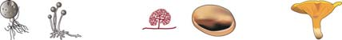
624 Capítulo 29
29.4 (página 615)
7 Resumir la importancia ecológica de los hongos como descomponedores.
■ La mayoría de los hongos son descomponedores de los compuestos orgánicos de los organismos muertos, hojas, basura y desechos en nutrientes más simples que pueden reciclarse. 8 Describir el importante papel ecológico de las micorrizas.
■ Las micorrizas son asociaciones mutualistas entre hongos y las raíces de plantas. El hongo proporciona agua y minerales nutrientes a la planta; el hongo obtiene compuestos orgánicos de la planta. Los glomeromicetos forman endomicorrizas con las raíces. Ascomicetos y basidiomicetos forman ectomicorrizas con raíces de árbol; no penetran las células de la raíz. 9 Caracterizar la naturaleza única de un liquen.
■ Un liquen es una combinación de un hongo y un fotoautótrofo (alga o cianobacteria). En esta relación simbiótica, el fotoautótrofo proporciona al hongo compuestos orgánicos. El hongo puede brindar al fotoautótrofo refugio, agua y minerales. Los líquenes tienen tres formas principales: crustáceo, folioso y fruticuloso.
Aprenda más acerca de los líquenes al hacer clic sobre la fi gura en CengageNOW.
29.5 (página 619)
10 Resumir algunas formas específi cas en que los hongos repercuten económicamente en los humanos.
■ Los hongos causan enormes pérdidas económicas al dañar alimentos y cultivos. Por otra parte, algunos hongos, como las setas, son alimentos; otros, como las levaduras, se usan para producir cerveza, vino y pan, e incluso otros se usan para producir quesos o químicos industriales. 11 Resumir la importancia de los hongos para la biología y la medicina; describir cómo los hongos infectan plantas y humanos, y describir al menos una enfermedad animal fúngica y una enfermedad vegetal fúngica.
■ Los biólogos usan la levadura Saccharomyces cerevisiae y otros hongos como organismos modelo para investigación en biología molecular y genética. Los hongos también se investigan para el control biológico de insectos, como los mosquitos que transmiten la malaria.
■ Los hongos se usan para elaborar muchos medicamentos, incluidos penicilina y otros antibióticos; se usan en biorremediación y para el control biológico de plagas.
■ Los hongos son patógenos oportunistas en los humanos. Causan enfermedades humanas, como histoplasmosis; algunos hongos producen micotoxinas , como las afl atoxinas , que pueden causar daño hepático y cáncer.
■ Las hifas fúngicas infectan plantas a través de estomas. Ramifi caciones hifales llamadas haustorios penetran las células de la planta y obtienen nutrición a partir del citoplasma. Los hongos causan muchas enfermedades vegetales importantes, incluida podredumbre parda, carbón del maíz y roya del trigo.
■ Los cigomicetos , como el moho negro del pan, Rhizopus , forman un talo haploide que produce esporas asexuales y esporas sexuales. Las esporas asexuales germinan y forman nuevos talos. En la reproducción sexual, las hifas de dos diferentes tipos de apareamiento haploides forman gametangios. Conforme el gametangio se fusiona ocurre plasmogamia. Ocurre cariogamia y se forma un cigoto diploide; el cigoto crece hasta ser una cigospora . La meiosis produce cigosporas haploides recombinantes. Cuando las cigosporas germinan, cada hifa desarrolla un esporangio en su punta. Se liberan esporas, que se transforman hasta ser nuevas hifas.
■ Los microsporidios , actualmente clasifi cados como cigomicetos, son patógenos oportunistas que penetran e infectan células animales con sus largos tubos polares con forma de hilo.
■ Los glomeromicetos tienen hifas cenocíticas. Se reproducen asexualmente con grandes esporas multinucleadas llamadas bastosporas. Los glomeromicetos son simbiontes que forman asociaciones intracelulares llamadas micorrizas con las raíces de las plantas. Puesto que extienden sus hifas en las células de raíz, los glomeromicetos son hongos endomicorrizos . Las endomicorrizas más comunes se llaman micorrizas arbusculares porque las hifas dentro de las células de raíz forman estructuras ramifi cadas con forma de árbol conocidas como arbúsculos .
■ Los ascomicetos incluyen levaduras, hongos taza, laminillas, trufas y mohos azul-verdoso, rosa y pardo. Algunos ascomicetos forman micorrizas; otros forman líquenes. Los ascomicetos producen esporas asexuales llamadas conidias ; producen esporas sexuales llamadas ascosporas en ascos con forma de saco. Los ascos recubren un cuerpo fructífero llamado ascocarpo .
■ En los ascomicetos, micelios haploides de tipos de apareamiento opuesto producen hifas septadas. Ocurre plasmogamia e intercambio de núcleos. Ocurre una etapa dicariota n + n en la que se forman hifas y producen ascos y un ascocarpo. Ocurre cariogamia, seguida por meiosis. Los núcleos recombinantes se dividen por mitosis, lo que produce ocho núcleos haploides que se desarrollan en ascosporas. Cuando las ascosporas germinan, pueden formar nuevos micelios.
■ Los basidiomicetos incluyen setas, bejines, hongos de repisa, royas y carbones.
■ Estos hongos producen esporas sexuales llamadas basidiosporas en el exterior de un basidio . Los basidios crecen sobre la superfi cie de láminas en las setas; las setas son un tipo de basidiocarpo (un cuerpo fructífero).
■ Las hifas en los basidiomicetos tienen septos. Ocurre plasmogamia con la fusión de dos hifas de diferentes tipos de apareamiento. Se forma un micelio secundario dicariota. Luego se desarrolla un basidiocarpo y se forman basidios. Ocurre cariogamia y produce un núcleo de cigoto diploide. La meiosis produce cuatro núcleos haploides que se convierten en basidiosporas. Cuando las basidiosporas germinan, forman micelios primarios haploides.
Explore ciclos de vida fúngicos al hacer clic sobre las fi guras en CengageNOW.
EVALÚE SU COMPRENSIÓN
Los hongos son (a) eucariotas y opistocontos (b) procariotas y opistocontos (c) fl agelados y dicariotas (d) eucariotas autótrofos (e) heterótrofos con paredes celulares de celulosa
¿Cuál de los siguientes hongos no tiene micelio? (a) moho negro del pan (b) levadura (c) hongo taza descomponedor (d) seta cultivada (e) Penicillium
Una célula descrita como n + n es (a) monocariota (b) diploide (c) haploide (d) cenocítica (e) dicariota
Con excepción de los quitridiomicetos, los hongos generalmente se diseminan mediante (a) corrientes de agua (b) fragmentación de hifas (c) soredios (d) esporas aerotransportadas (e) zoosporas fl ageladas
¿Cuál enunciado no es verdadero acerca de los quitridiomicetos? (a) son simples hongos acuáticos (b) producen células mótiles con un solo fl agelo posterior (c) experimentan reproducción sexual y asexual (d) sus células son dicariotas (e) fueron los hongos más primitivos en evolucionar
¿Cuál enunciado no es verdadero acerca de los cigomicetos? (a) muchos miembros de este grupo forman endomicorrizas con raíces de árbol (b) sus esporas sexuales se llaman cigosporas (c) experimentan reproducción sexual y asexual (d) ocurre plasmogamia y cariogamia (e) tienen hifas cenocíticas
Los hongos 625
llaman basidiosporas (c) tienen un talo diploide que produce zoosporas (d) la reproducción principalmente es sexual (e) tienen basidios microscópicos
Una combinación de organismos que consiste en un fotoautótrofo y un hongo se llama ________ (a) endomicorriza arbuscular (b) ectomicorriza (c) liquen (d) agente patógeno (e) afl atoxina
Las asociaciones mutualistas entre hongos y las raíces de plantas se llaman (a) líquenes (b) micorrizas (c) asociaciones patógenas (d) haustorios parásitos (e) simbiosis micotóxica
Cuando un hongo infecta una planta, (a) infi ltra hojas con líquenes (b) forma relaciones al unir micorrizas a tallos (c) segrega poderosos jugos digestivos sobre las hojas (d) usa haustorios para disolver raíces (e) entra a hojas o tallos a través de estomas
Los glomeromicetos (a) se reproducen principalmente mediante esporas sexuales llamadas glomerosporas (b) se caracterizan por estructuras únicas llamadas tubos polares (c) se asocian con cianobacterias para formar líquenes (d) incluyen muchos patógenos oportunistas que causan enfermedades humanas (e) forman endomicorrizas arbusculares con raíces de árbol
El ciclo de vida ascomiceto por lo común incluye (a) principalmente talos diploides (b) la formación de un grueso cigosporangio (c) la producción de ocho ascosporas haploides dentro de un asco (d) la producción de microsporidios (e) la producción de ascosporas, zoosporas y conidias en diferentes etapas
¿Cuál enunciado no es verdadero de los basidiomicetos? (a) producen un micelio secundario con hifas n + n (b) sus esporas sexuales se
PENSAMIENTO CRÍTICO
Explique el enunciado “las setas son como puntas de icebergs”. Si el lector no ve setas en su jardín, ¿puede concluir que ahí no viven hongos? ¿Por qué sí o por qué no?
VÍNCULO CON LA EVOLUCIÓN. Justifi que (a) la clasifi cación de los hongos como opistocontos; (b) la clasifi cación de los microsporidios como hongos; (c) el agrupamiento de ascomicetos y basidiomicetos como clados hermanos.
CIENCIA, TECNOLOGÍA Y SOCIEDAD. Los biólogos descubrieron que muchos hongos micorrizas son sensibles a un pH bajo. ¿Qué problema ambiental causado por los humanos puede resultar catastrófi co para estos hongos? ¿Cómo este problema puede afectar a sus compañeros vegetales? ¿Qué medida podría tomarse para reducir el problema?
A continuación se muestra el micelio secundario de un basidiomiceto. (a) ¿Cómo describiría sus células? (b) ¿En qué etapa de su ciclo de vida se encuentra? (c) Dibuje el siguiente paso en esta etapa de su ciclo de vida.
Preguntas adicionales están disponibles en CengageNOW en www.cengage.com/login.